<!doctype html>
<html lang="en">
<head>
  <meta charset="utf-8">
  <meta name="viewport" content="width=device-width, initial-scale=1">
  <title>arxiv digest — 2026-05-18</title>
  <style>
:root {
  --bg: #ffffff;
  --fg: #1f2328;
  --muted: #59636e;
  --border: #d0d7de;
  --card: #f6f8fa;
  --link: #0969da;
}
body {
  max-width: 980px;
  margin: 0 auto;
  padding: 2rem 1rem 5rem;
  font-family: -apple-system, BlinkMacSystemFont, "Segoe UI", Helvetica, Arial, sans-serif;
  line-height: 1.55;
  color: var(--fg);
  background: var(--bg);
}
a { color: var(--link); }
img { max-width: 100%; height: auto; }
pre, code { background: var(--card); border-radius: 6px; }
pre { padding: 1rem; overflow-x: auto; }
blockquote { border-left: 4px solid var(--border); padding-left: 1rem; color: var(--muted); }
details { margin: 0.6rem 0; }
summary { cursor: pointer; font-weight: 600; }
.paper-figures-scroll {
  display: flex;
  gap: 1rem;
  overflow-x: auto;
  overscroll-behavior-x: contain;
  padding: 0.75rem 0.25rem 1rem;
  margin: 1rem 0 1.25rem;
  border-top: 1px solid var(--border);
  border-bottom: 1px solid var(--border);
  scroll-snap-type: x proximity;
}
.paper-figure-card {
  flex: 0 0 min(260px, 72vw);
  scroll-snap-align: start;
  background: var(--card);
  border: 1px solid var(--border);
  border-radius: 12px;
  padding: 0.55rem;
}
.paper-figure-card img {
  display: block;
  width: 100%;
  max-height: 240px;
  object-fit: contain;
  background: white;
  border-radius: 8px;
}
.paper-figure-caption {
  display: block;
  margin-top: 0.5rem;
  color: var(--muted);
  font-size: 0.85rem;
}
.figure-strip-hint {
  color: var(--muted);
  font-size: 0.9rem;
  margin-bottom: -0.3rem;
}
</style>
  <!-- MathJax: renders $...$ inline math and $$...$$ display math, plus
       \(...\) and \[...\]. Loaded from the official CDN; works offline
       once cached. Configured to skip code/pre blocks so arxiv IDs that
       look like dollar amounts don't get mangled. -->
  <script>
    window.MathJax = {
      tex: {
        inlineMath: [['$', '$'], ['\\(', '\\)']],
        displayMath: [['$$', '$$'], ['\\[', '\\]']],
        processEscapes: true,
        processEnvironments: true
      },
      options: {
        skipHtmlTags: ['script', 'noscript', 'style', 'textarea', 'pre', 'code'],
        ignoreHtmlClass: 'tex2jax_ignore',
        processHtmlClass: 'tex2jax_process'
      }
    };
  </script>
  <script id="MathJax-script" async
    src="https://cdn.jsdelivr.net/npm/mathjax@3/es5/tex-chtml.js"></script>
</head>
<body>
<header style="background-color: #333; color: white; padding: 15px; margin-bottom: 20px;">
  <h1 style="margin: 0; font-size: 24px;">
    <a href="https://ochelpan.github.io/arXiv_clean/" style="color: white; text-decoration: none;">Main</a>
  </h1>
</header>

<h1>Daily arXiv Report</h1>

<hr>
<p>
<a href="index.html">← Index</a>
 · <a href="papers_03.html">← Previous</a> · <a href="papers_05.html">Next →</a>
</p>
<hr>

<h2>Papers 61–80</h2>
<p><a id="paper-2605.16025"></a></p>
<h3 id="beyond-trace-class-and-hilbert-schmidt-interaction-between-operator-ideals-and-von-neumann-algebras-in-quantum-physics"><a href="http://arxiv.org/abs/2605.16025v1">Beyond trace-class and Hilbert-Schmidt -- Interaction between operator ideals and von Neumann algebras in quantum physics</a></h3>
<p><strong>Authors:</strong> Frank Oertel<br>
<strong>Type:</strong> theory · <strong>Category:</strong> other · <strong>PDF:</strong> <a href="https://arxiv.org/pdf/2605.16025v1">https://arxiv.org/pdf/2605.16025v1</a><br>
<strong>Analysis basis:</strong> full PDF text, analyzed in chunks
<strong>Topic relevance:</strong> <code>entanglement &amp; information structure</code> <strong>2/5</strong></p>
<div class="figure-strip-hint">↔ Scroll figures horizontally</div>
<div class="paper-figures-scroll">
<figure class="paper-figure-card">
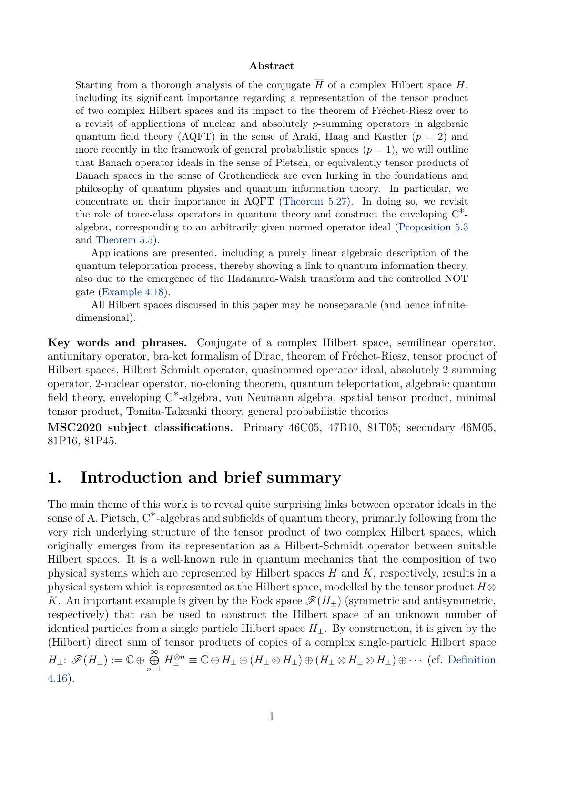
<figcaption class="paper-figure-caption"><b>Fig 1.</b> Low-resolution page preview, page 2</figcaption>
</figure>
<figure class="paper-figure-card">
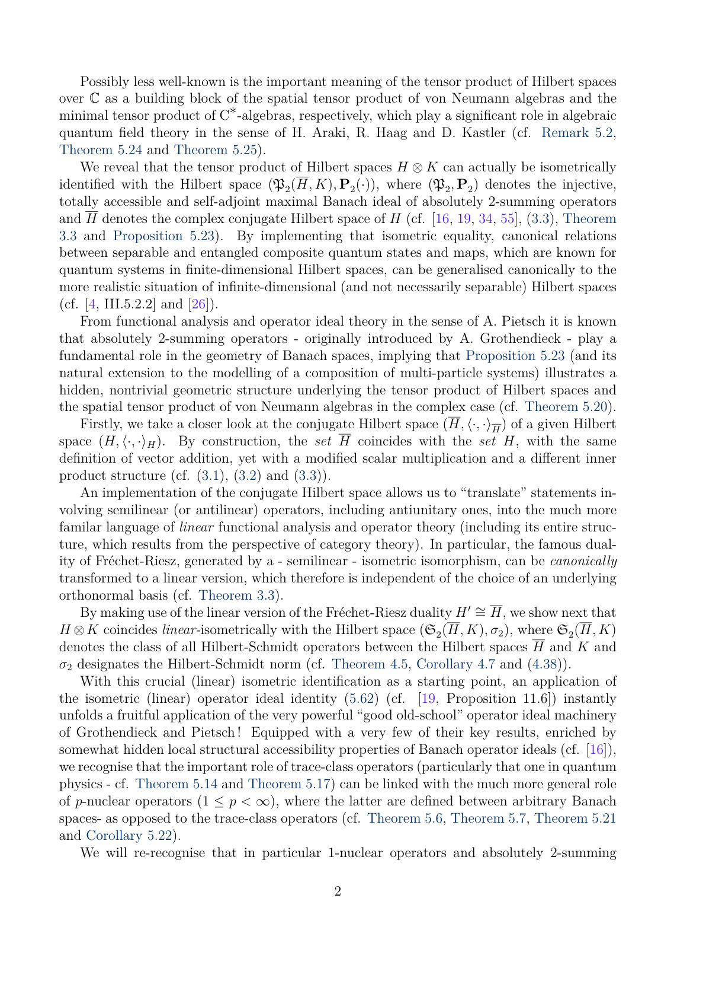
<figcaption class="paper-figure-caption"><b>Fig 2.</b> Low-resolution page preview, page 3</figcaption>
</figure>
<figure class="paper-figure-card">
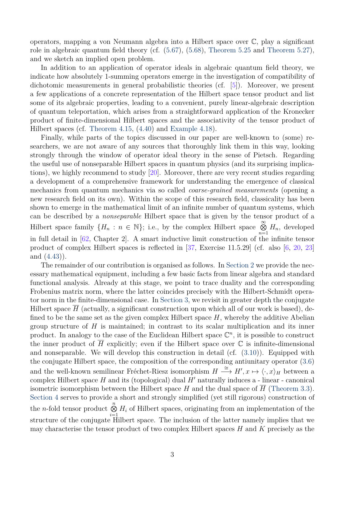
<figcaption class="paper-figure-caption"><b>Fig 3.</b> Low-resolution page preview, page 4</figcaption>
</figure>
<figure class="paper-figure-card">
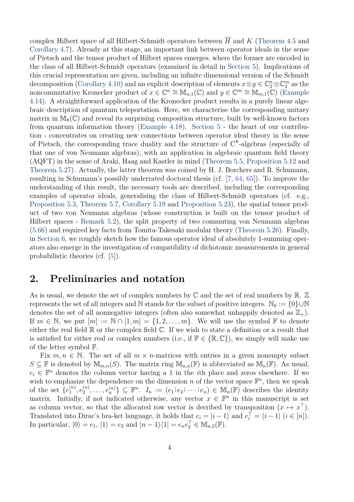
<figcaption class="paper-figure-caption"><b>Fig 4.</b> Low-resolution page preview, page 5</figcaption>
</figure>
<figure class="paper-figure-card">
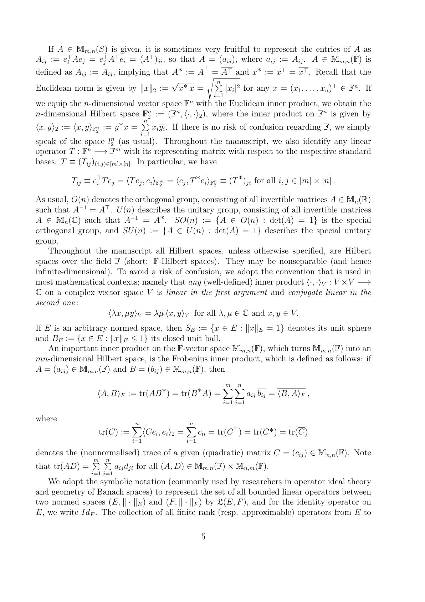
<figcaption class="paper-figure-caption"><b>Fig 5.</b> Low-resolution page preview, page 6</figcaption>
</figure>
</div>

<p><strong>Summary.</strong> This theoretical paper bridges functional analysis and quantum physics by showing that concepts like operator ideals are fundamental to quantum theory. It rigorously connects the tensor product of Hilbert spaces to specific classes of bounded operators, offering a deep mathematical insight into quantum information and quantum field theory structures.</p>
<p><strong>Why it may be interesting.</strong> It provides a highly abstract, mathematical underpinning for quantum information protocols (like teleportation) and quantum field theory, suggesting that the underlying mathematical structure is governed by operator ideal theory.</p>
<details>
<summary>Detailed structure</summary>
<p><strong>Main problem.</strong> The paper aims to reveal deep, structural connections between abstract mathematical tools—specifically operator ideals (like trace-class and $p$-nuclear operators)—and the foundational formalism of quantum physics, including AQFT and quantum information theory.</p>
<p><strong>Main result.</strong> It establishes that the tensor product structure of Hilbert spaces can be rigorously identified with spaces of absolutely $p$-summing operators, providing a linear algebraic description for processes like quantum teleportation.</p>
<p><strong>Method.</strong> The methodology combines advanced functional analysis (Pietsch's operator ideals, Grothendieck theory) with the mathematical framework of von Neumann algebras and the analysis of conjugate Hilbert spaces.</p>
<p><strong>Model / system.</strong> The theoretical framework involves general complex Hilbert spaces, their tensor products, and the algebraic structures underpinning quantum field theories (von Neumann algebras). Applications include modeling quantum teleportation and analyzing compatibility in General Probabilistic Theories (GPTs).</p>
<p><strong>Key observables.</strong> Operator ideals ($\mathcal{L}_2, \mathcal{N}, \mathcal{P}_2$), the compatibility degree $\gamma$, and the modular operator $\Delta$.</p>
<p><strong>Important parameters / regimes.</strong> The parameter $p$ in $p$-nuclear operators ($1 \le p < \infty$), and the number of measurements $g$ in GPTs.</p>
<p><strong>Assumptions / limitations.</strong> The analysis relies heavily on advanced theorems regarding isometric isomorphisms between a Hilbert space and its dual, and the assumption of 'split' properties for commuting von Neumann algebras.</p>
<p><strong>Paper structure.</strong> The paper progresses from analyzing the conjugate Hilbert space and its relation to the dual space, to establishing the identification of tensor products with operator ideals, and finally applying these concepts to AQFT and GPTs.</p>
</details>
<details>
<summary>Abstract</summary>
<p>Starting from a thorough analysis of the conjugate $\overline{H}$ of a complex Hilbert space $H$, including its significant importance regarding a representation of the tensor product of two complex Hilbert spaces and its impact to the theorem of Fréchet-Riesz over to a revisit of applications of nuclear and absolutely $p$-summing operators in algebraic quantum field theory (AQFT) in the sense of Araki, Haag and Kastler ($p=2$) and more recently in the framework of general probabilistic spaces ($p=1$), we will outline that Banach operator ideals in the sense of Pietsch, or equivalently tensor products of Banach spaces in the sense of Grothendieck are even lurking in the foundations and philosophy of quantum physics and quantum information theory. In particular, we concentrate on their importance in AQFT (Theorem 5.27). In doing so, we revisit the role of trace-class operators in quantum theory and construct the enveloping $\tup{C}^\adj$-algebra, corresponding to an arbitrarily given normed operator ideal (Proposition 5.3 and Theorem 5.5).   Applications are presented, including a purely linear algebraic description of the quantum teleportation process, thereby showing a link to quantum information theory, also due to the emergence of the Hadamard-Walsh transform and the controlled NOT gate (Example 4.18).   All Hilbert spaces discussed in this paper may be nonseparable (and hence infinite-dimensional).</p>
</details>
<p><sub><a href="#top">↑ back to top</a></sub></p>

<p><a id="paper-2605.15344"></a></p>
<h3 id="fire-and-ice-partially-fault-tolerant-quantum-computing-with-selective-state-filtering"><a href="http://arxiv.org/abs/2605.15344v1">Fire and ice: Partially fault-tolerant quantum computing with selective state filtering</a></h3>
<p><strong>Authors:</strong> Ben W. Reichardt, David Aasen, Rui Chao<br>
<strong>Type:</strong> theory · <strong>Category:</strong> quantum information and computing · <strong>PDF:</strong> <a href="https://arxiv.org/pdf/2605.15344v1">https://arxiv.org/pdf/2605.15344v1</a><br>
<strong>Analysis basis:</strong> full PDF text, analyzed in chunks
<strong>Topic relevance:</strong> <code>QC/QI experiment</code> <strong>2/5</strong></p>
<div class="figure-strip-hint">↔ Scroll figures horizontally</div>
<div class="paper-figures-scroll">
<figure class="paper-figure-card">
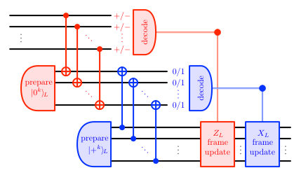
<figcaption class="paper-figure-caption"><b>Fig 1.</b> FIG. 3. Steane-style Z error correction (red) and X error correction (blue) for an Jn, k, dK CSS code. Since transversal physical CNOTs implement transversal logical CNOTs, the logical circuit is two steps of one-qubit teleportation. The difficult part of implementing this scheme is constructing good circuits to prepare the encoded ancilla states |0k⟩L and |+k⟩L.</figcaption>
</figure>
<figure class="paper-figure-card">
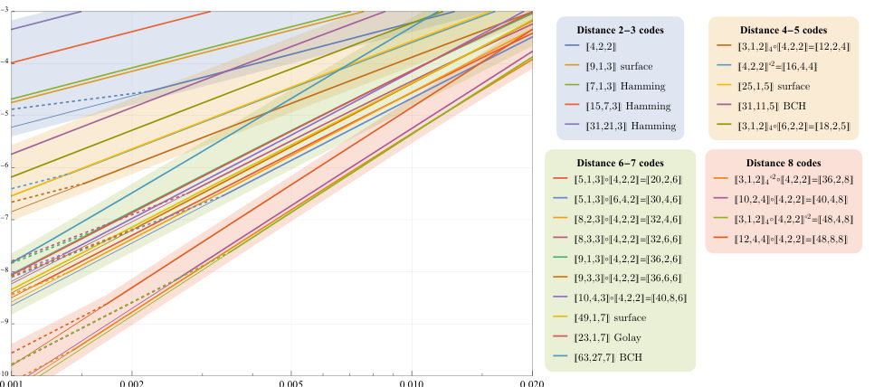
<figcaption class="paper-figure-caption"><b>Fig 2.</b> FIG. 4. Logical error rate conditioned on acceptance, pL, for an ideal decoder against independent bit-flip noise at rate p, i.e., code capacity model. The dashed lines plot pR/300 in the ranges when the rejection rate limits the number of operations according to the criteria of Sec. III, i.e., when pR &gt; 300pL.</figcaption>
</figure>
<figure class="paper-figure-card">
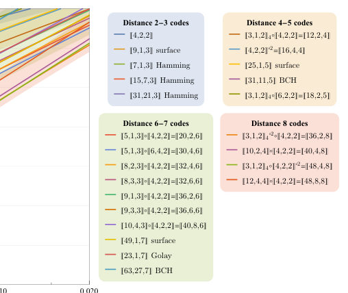
<figcaption class="paper-figure-caption"><b>Fig 3.</b> Figure 4 suggests that achieving logical error rates per round of error correction of ≲10−6, at moderate physical noise rates, will require using codes of distance ≥6. Appendix A simulates several codes of distance 2–5 under circuit-level noise, essentially validating this conclusion. In this section, we will study repeated error correction for codes of distance 6–8. We will consider the J20, 2, 6K code of Fig. 2, the J32, 4, 6K code obtained from applying Corollary 2 to the J8, 2, 3K code of Fig. 6, the J3, 1, 2K◦2 4 ◦J4, 2, 2K = J36, 2, 8K Knill code, and the  J3, 1, 2K4 ◦J4, 2, 2K)⊗2 ◦J4, 2, 2K = J48, 4, 8K code. Aside from their solid performance un- der memory bit-flip noise, the key...</figcaption>
</figure>
<figure class="paper-figure-card">
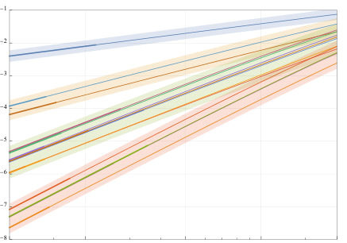
<figcaption class="paper-figure-caption"><b>Fig 4.</b> FIG. 5. Rejection rate pR for an ideal decoder against inde- pendent bit-flip noise at rate p. The legend is the same as in Fig. 4 except not showing the odd-distance codes without postselection. The curves are thicker when pR &gt; 300pL.</figcaption>
</figure>
<figure class="paper-figure-card">
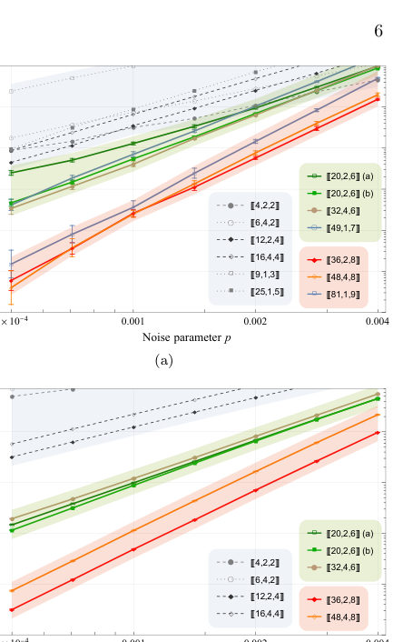
<figcaption class="paper-figure-caption"><b>Fig 5.</b> FIG. 7. Logical error rate (a) and rejection rate (b) per round of error correction, or per cycle of syndrome extraction for the surface codes. The surface codes have rejection rate 0. The gray data points, for codes of distance ≤5, are plotted more clearly in Fig. 18.</figcaption>
</figure>
</div>

<p><strong>Summary.</strong> This paper proposes a practical, partially fault-tolerant quantum computation scheme by concatenating established quantum error-correcting codes. It demonstrates that by accepting non-strict fault tolerance and using selective filtering, the scheme achieves low logical error rates efficiently at realistic noise levels. This work offers a tangible roadmap for scaling quantum computation on near-term hardware.</p>
<p><strong>Why it may be interesting.</strong> The detailed analysis of error scaling, overhead management, and the comparison between different gate implementations (e.g., teleported vs. direct CNOT) provides concrete, actionable engineering guidelines for building fault-tolerant quantum processors.</p>
<details>
<summary>Detailed structure</summary>
<p><strong>Main problem.</strong> To develop a quantum computation scheme that is reliable and resource-efficient for near-term quantum hardware, bridging the gap between physical and required logical error rates.</p>
<p><strong>Main result.</strong> The concatenated error-correcting scheme is shown to be reliable and resource efficient at realistic simulated noise rates, demonstrating a practical path toward scalable quantum computation.</p>
<p><strong>Method.</strong> The authors develop the scheme by concatenating the five-qubit Laflamme code onto the four-qubit Iceberg code, relying on selective filtering rather than strict fault tolerance.</p>
<p><strong>Model / system.</strong> The analysis focuses on quantum error correction codes (e.g., J20, 2, 6K; J36, 2, 8K) applied to near-term quantum hardware, specifically mentioning platforms like trapped ions or neutral atoms.</p>
<p><strong>Key observables.</strong> Logical Error Rates ($p_L$), Rejection Rates ($p_R$), and Overhead (e.g., CNOT gate counts per accepted state).</p>
<p><strong>Important parameters / regimes.</strong> Physical error rates ($p \sim 10^{-4}$ to $4 	imes 10^{-3}$), required logical error rates ($< 10^{-4}$ or $10^{-6}$), and code distance ($d$).</p>
<p><strong>Assumptions / limitations.</strong> The scheme is explicitly not strictly fault-tolerant, and the analysis relies on simplified circuit noise models and postselection.</p>
<p><strong>Figures summary.</strong> Figures illustrate the concatenation process, stabilizer generators, and circuit diagrams comparing one-stage vs. two-stage ancilla factories for state preparation and CNOT gate implementation.</p>
<p><strong>Paper structure.</strong> The paper progresses by first establishing the concatenated code structure, then analyzing the role of postselection in managing error rates, and finally comparing the overhead and performance of implementing logical gates (like CNOT) using different circuit designs.</p>
</details>
<details>
<summary>Abstract</summary>
<p>We develop an error-corrected quantum computation scheme based on concatenating the five-qubit Laflamme code onto the four-qubit Iceberg code. The approach skates a thin line: it is explicitly not fault tolerant, risking higher logical error rates, and it relies on selective filtering to prepare encoded states for error correction, risking significant overhead. Yet, at realistic simulated noise rates, the scheme is reliable and resource efficient. It forges a practical path toward scalable quantum computation.</p>
</details>
<p><sub><a href="#top">↑ back to top</a></sub></p>

<p><a id="paper-2605.15297"></a></p>
<h3 id="towards-deploying-optimistic-quantum-fourier-transforms-an-architecture-algorithm-co-design-study"><a href="http://arxiv.org/abs/2605.15297v1">Towards Deploying Optimistic Quantum Fourier Transforms: An Architecture-Algorithm Co-Design Study</a></h3>
<p><strong>Authors:</strong> Pedro L. S. Lopes<br>
<strong>Type:</strong> theory · <strong>Category:</strong> quantum information and computing · <strong>PDF:</strong> <a href="https://arxiv.org/pdf/2605.15297v1">https://arxiv.org/pdf/2605.15297v1</a><br>
<strong>Analysis basis:</strong> full PDF text, analyzed in chunks
<strong>Topic relevance:</strong> <code>QC/QI experiment</code> <strong>2/5</strong></p>
<div class="figure-strip-hint">↔ Scroll figures horizontally</div>
<div class="paper-figures-scroll">
<figure class="paper-figure-card">
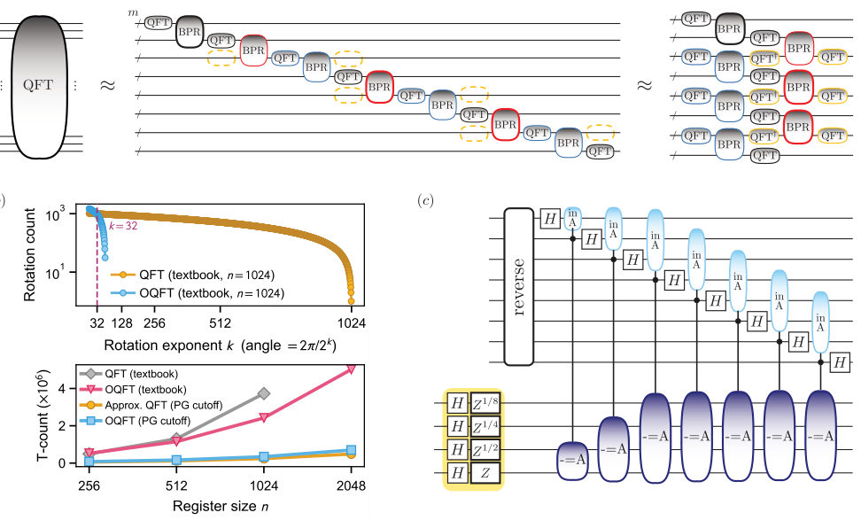
<figcaption class="paper-figure-caption"><b>Fig 1.</b> Fig. 1. Logic and resource structure of Optimistic Quantum Fourier Transforms. (a) An n-qubit QFT is truncated and decomposed into m ∼log n sub-blocks and block-phased rotations (BPR) eiXY/22m, where X and Y are the register contents of the blocks involved. Approximately commuting the blue sub-circuits past the red ones—at the cost of extra yellow log-sized QFT blocks—yields the log-depth OQFT [18]. (b) Rotation spectra (top) and T-counts (bottom) for different QFT and OQFT implementations. The OQFT naturally truncates small rotations relative to the textbook QFT, but introduces ∼44% additional rotations. Catalytic additions into a truncated phase-gradient (PG) state, as shown in (c),...</figcaption>
</figure>
<figure class="paper-figure-card">
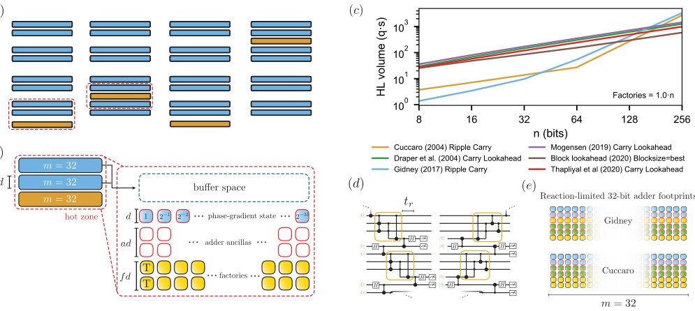
<figcaption class="paper-figure-caption"><b>Fig 2.</b> Fig. 2. Coarse-grained architecture overview and reaction-limited adder resource analysis review. (a) Macro-scale architecture: the system register is organized into m = 32 data blocks (blue), paired vertically. Here four pairs are displayed side by side. Surface-code logical qubits are assumed throughout. Resources (dark yellow) form a mobile gadget that, when docked to data blocks above or below, defines a hot zone as shown in (b), which can drive processing. (b) Anatomy of a hot zone: rows of ancillae (red-edged squares), magic-state factories (yellow, black-edged; fold-transversal cultivation), and phase-gradient registers. The buffer space is occupied by data qubits as needed. (c)...</figcaption>
</figure>
<figure class="paper-figure-card">
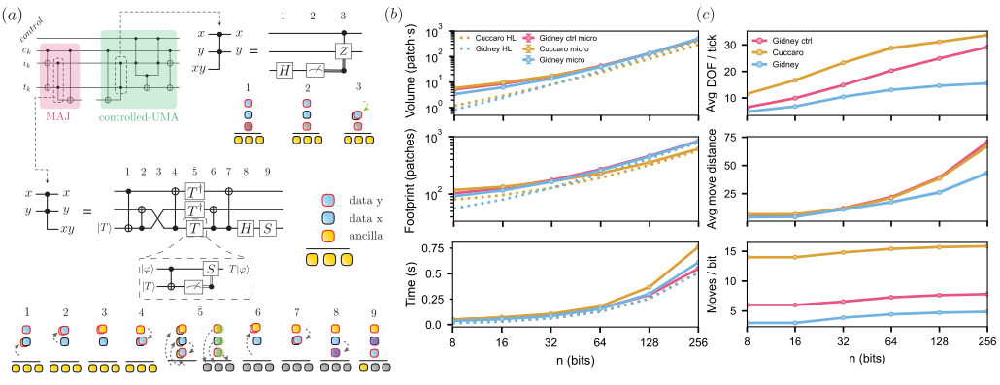
<figcaption class="paper-figure-caption"><b>Fig 3.</b> Fig. 3. Fine-grained adder scheduling and simulated performance. (a) Microscheduled routing for one iterative block of Gidney’s controlled adder. Face and edge colors identify qubit roles. Yellow patches with black edges are T factories, grey patches are reset after measurement, and purple shading marks single-qubit gates. Green operations are classically controlled and count at half depth in our cost model. The logical-AND ancilla is assumed to start with a cultivated T state. The ∼10 steps of a logical-AND operation roughly match the T-state re-cultivation time, facilitating factory pipelining. Relative to Ref. [1], we eliminate one CNOT via a near-free SWAP during MAJ. (b) Performance...</figcaption>
</figure>
<figure class="paper-figure-card">
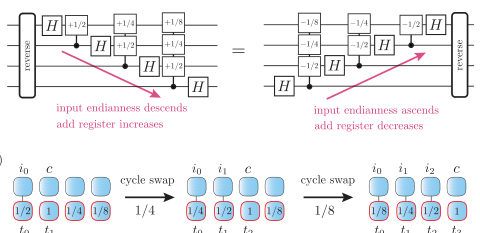
<figcaption class="paper-figure-caption"><b>Fig 4.</b> Fig. 4. Mesoscale routing analysis. (a) Two near-equivalent realizations of a QFT: reversing the addition order requires only a register negation and a unit increment. In both cases the most-significant target bit shifts as the protocol progresses. (b) Cyclic swapping of the phase-gradient register (red edges) keeps addition inputs and targets aligned. At our distance and time scales, swaps can be batched in groups of seven within a single QEC cycle. Note that PG additions within a QFT block have a fixed most-significant bit in−1 = 0, not displayed. Most reverse operations can be commuted through the OQFT resulting in a single group of rearrangements in the beginning or end of protocol.</figcaption>
</figure>
<figure class="paper-figure-card">
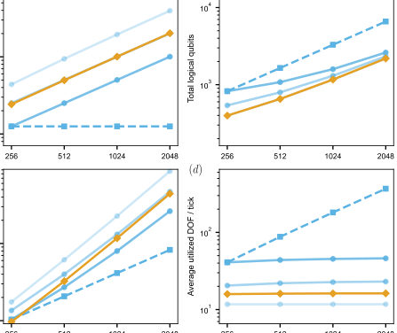
<figcaption class="paper-figure-caption"><b>Fig 5.</b> Fig. 5. Integrated OQFT performance as a function of register size for varying hot-zone counts. Yellow diamonds mark the regular (serial) QFT baseline. (a) Time to solution. Saturating the hot-zone count (hz = max) yields constant-time execution at the cost of a ∼6× increase in logical qubits; at fixed counts, hz = 2 suffices to match the regular QFT, while hz = 4 halves the execution time. (b) Qubit footprint. (c) Combined protocol volume as product of footprint-time. (d) Average concurrent degrees of freedom (DOF). At hz = 4, the overhead is roughly 500 logical ancillae and average 46 concurrent logical operations.</figcaption>
</figure>
</div>

<p><strong>Summary.</strong> This paper presents a detailed co-design study for running the Optimistic Quantum Fourier Transform on neutral-atom quantum hardware. It introduces a 'hot-zone' architecture to manage mobile quantum resources, achieving significant speedups by optimizing the scheduling of core components like quantum adders. The work establishes critical resource requirements, showing that performance hinges on managing parallelism and reaction-limited operations.</p>
<p><strong>Why it may be interesting.</strong> It provides a concrete, hardware-aware roadmap for implementing complex quantum algorithms like QFT, directly linking algorithmic complexity to physical resource constraints (mobility, parallelism) in neutral-atom platforms.</p>
<details>
<summary>Detailed structure</summary>
<p><strong>Main problem.</strong> The paper addresses the challenge of efficiently deploying the Optimistic Quantum Fourier Transform (OQFT) algorithm on near-term, fault-tolerant quantum hardware.</p>
<p><strong>Main result.</strong> By implementing a hot-zone architecture and optimizing adder circuits, the OQFT can achieve significant speedups, potentially halving the runtime compared to serial QFTs, provided sufficient parallelism is available.</p>
<p><strong>Method.</strong> The authors employ an architecture-algorithm co-design study, simulating resource routing and scheduling across specialized hardware components.</p>
<p><strong>Model / system.</strong> The study is scoped to reconfigurable neutral-atom hardware utilizing the surface code for fault tolerance. It models the system using a 'hot-zone' architecture that separates stationary data storage from mobile processing units.</p>
<p><strong>Key observables.</strong> Time to solution, protocol volume (space-time cost), peak Degrees of Freedom (DOF), and the required number of logical ancillae.</p>
<p><strong>Important parameters / regimes.</strong> Code distance (d=15), hot-zone count (2 to 4+), and the size of the quantum register (256–2048 bits).</p>
<p><strong>Assumptions / limitations.</strong> The analysis assumes reaction-limited operation and is currently scoped to cultivation-only magic-state factories and surface codes.</p>
<p><strong>Figures summary.</strong> Figures illustrate the decomposition of OQFT into sub-blocks, compare T-counts across different implementations, and show macro-scale architectural layouts detailing the hot zone and data regions.</p>
<p><strong>Paper structure.</strong> The paper progresses from analyzing the OQFT structure and resource needs, to developing the hot-zone architecture, comparing and selecting optimal adder circuits (Gidney vs. Cuccaro), and finally integrating these components to analyze the full OQFT performance scaling.</p>
</details>
<details>
<summary>Abstract</summary>
<p>We present an architecture-algorithm co-design study of the Optimistic Quantum Fourier Transform (OQFT) under a surface-code fault-tolerant execution model for reconfigurable neutral-atom hardware. Analyzing the OQFT structure, particularly its reliance on phase-gradient resources and small-scale blocks, highlights architectural requirements for resource mobility and parallel execution. Guided by that, we introduce a hot-zone architecture that decouples data storage from processing and dynamically routes mobile resource packages (magic-state factories, bridge qubits, and phase-gradient registers) to stationary data regions. To expose dominant costs, we route rotation insertions via catalytic phase-gradient addition and heuristically micro-schedule ripple-carry adders to patch-level moves. Under this model, leading Gidney~\cite{Gidney2018halvingcostof} and Cuccaro~\cite{cuccaro2004} adders have similar space-time volume but require different levels of parallelism. At the algorithm level, the five-layer OQFT shows a tunable parallelism/latency trade-off: two hot zones match serial-QFT latency, four hot zones roughly halve runtime, and additional hot zones asymptotically approach constant-time execution at substantial resource cost. Across 256-2048-bit instances, the requirements for half-time performance converge to about 500 additional logical ancillae and a peak parallelism of 128 logical qubits. We also identify broader algorithm-architecture bottlenecks, including endianness mismatches between phase-gradient and data registers, addressed via cyclic phase-gradient swaps and alternating QFT reflections. Scoped to surface codes and cultivation-only magic-state factories, our analysis identifies reaction-limited operation and parallelism demand as primary drivers of resource estimation and establishes a generalizable foundation for primitive-based architectural studies.</p>
</details>
<p><sub><a href="#top">↑ back to top</a></sub></p>

<p><a id="paper-2605.15653"></a></p>
<h3 id="thermodynamic-invariants-of-coupled-channels-a-many-channel-tolman-ehrenfest-effect"><a href="http://arxiv.org/abs/2605.15653v1">Thermodynamic Invariants of Coupled Channels: A Many-Channel Tolman-Ehrenfest Effect</a></h3>
<p><strong>Authors:</strong> Benjamin Hamblin, Victor Calo, Klaus Regenauer-Lieb<br>
<strong>Type:</strong> theory · <strong>Category:</strong> statistical mechanics · <strong>PDF:</strong> <a href="https://arxiv.org/pdf/2605.15653v1">https://arxiv.org/pdf/2605.15653v1</a><br>
<strong>Analysis basis:</strong> full PDF text, analyzed in chunks
<strong>Topic relevance:</strong> <code>Keldysh / 2PI / non-Gaussian methods</code> <strong>1/5</strong> · <code>analog quantum simulation</code> <strong>1/5</strong> · <code>correlated / nonlocal dissipation</code> <strong>1/5</strong> · <code>driven-dissipative phase transition</code> <strong>1/5</strong> · <code>entanglement &amp; information structure</code> <strong>1/5</strong> · <code>methods for driven-dissipative</code> <strong>1/5</strong> · <code>non-equilibrium dynamics</code> <strong>1/5</strong> · <code>non-equilibrium universality</code> <strong>1/5</strong></p>
<div class="figure-strip-hint">↔ Scroll figures horizontally</div>
<div class="paper-figures-scroll">
<figure class="paper-figure-card">
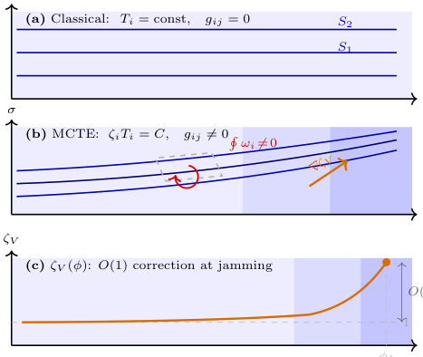
<figcaption class="paper-figure-caption"><b>Fig 1.</b> FIG. 1. Three-panel schematic of the MCTE framework (col- umn width). (a) Classical (gij = 0): entropy level sets are straight lines; each intensity Ti is independently uniform. (b) MCTE (gij ̸= 0): level sets curve; a closed loop accumu- lates a non-trivial Ruppeiner holonomy H ωi ̸= 0 (red), and the coupling coefficient ζV grows in the direction of increasing off-diagonal curvature (orange). The unique first integral of this flow is ζiTi = C. (c) ζV as a function of packing fraction ϕ: unity in the dilute limit, O(1) departure at jamming ϕJ, explaining the observed rise in Rowe’s Kµ.</figcaption>
</figure>
<figure class="paper-figure-card">
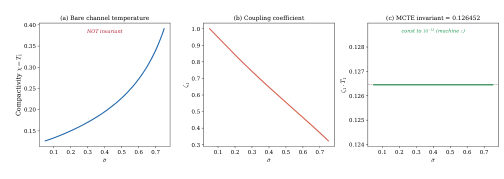
<figcaption class="paper-figure-caption"><b>Fig 2.</b> FIG. 2. MCTE invariance on the toy entropy surface S = a ln(V −VJ) + b ln(σmax−σ) −cσ/(V −VJ) with c = 0.3, V0 = 0.78. (a) Bare compactivity χ varies by a factor of 3 along the entropy level set. (b) Coupling coefficient ζ1 compensates. (c) Product ζ1T1 is constant to 10−13 (machine precision), verifying the MCTE relation. Full parameter study in the Supplemental Material [13].</figcaption>
</figure>
</div>

<p><strong>Summary.</strong> This theoretical paper generalizes the Tolman-Ehrenfest effect to coupled thermodynamic channels, deriving a universal invariant $\zeta_i T_i = C$. It applies this geometric framework to granular materials, successfully resolving long-standing puzzles regarding state-dependent material constants. The work demonstrates how geometric invariants derived from the entropy manifold can predict macroscopic physical laws in complex, coupled systems.</p>
<p><strong>Why it may be interesting.</strong> While focused on granular physics, the mathematical machinery—using geometric invariants (Ruppeiner connection, curvature) to define equilibrium in coupled systems—is highly relevant to understanding non-equilibrium thermodynamics in complex quantum many-body systems.</p>
<details>
<summary>Detailed structure</summary>
<p><strong>Main problem.</strong> The paper addresses the failure of single-channel equilibrium conditions when multiple thermodynamic channels are coupled, aiming to derive a universal invariant condition.</p>
<p><strong>Main result.</strong> The unique equilibrium invariant is found to be $\zeta_i T_i = C$, where $\zeta_i$ is the holonomy of the Ruppeiner connection, which resolves long-standing puzzles in granular physics.</p>
<p><strong>Method.</strong> The analysis extends the Tolman-Ehrenfest effect to the entropy manifold, utilizing the Ruppeiner metric and deriving the equilibrium condition as a first integral of the level-set flow.</p>
<p><strong>Model / system.</strong> The framework is applied to systems with $n$ coupled thermodynamic channels, with the canonical realization being the $N=2$ volume–stress granular ensemble.</p>
<p><strong>Key observables.</strong> The invariant $\zeta_i T_i = C$, the off-diagonal curvature $g_{V\sigma}$, the dilatancy ratio, and the MCTE-corrected Rowe relation $\sigma'^{1/3} = \zeta_V(\sigma) K_\mu R$.</p>
<p><strong>Important parameters / regimes.</strong> The coupling coefficient $\zeta_i$, the jamming point ($\phi_J$), and the dimensionality of the system ($N=2$ being the primary focus).</p>
<p><strong>Assumptions / limitations.</strong> The $N=2$ volume–stress ensemble is used as the canonical model, and the results are derived independently of the full $N=3$ non-associated flow dynamics.</p>
<p><strong>Figures summary.</strong> Figure 1 contrasts classical decoupled vs. coupled (MCTE) behavior showing the invariant. Figure 2 illustrates the MCTE invariance on a toy entropy surface, showing the product $\zeta_1 T_1$ remains constant despite variations in bare compactivity.</p>
<p><strong>Paper structure.</strong> The paper first establishes the failure of single-channel equilibrium, derives the MCTE invariant $\zeta_i T_i = C$ using the Ruppeiner metric, and then applies this general formalism to predict and resolve specific issues in granular plasticity (dilatancy, energy restriction, $K_\mu$ dependence).</p>
</details>
<details>
<summary>Abstract</summary>
<p>When multiple thermodynamic channels are coupled, single-channel equilibrium conditions fail. Extending the Tolman--Ehrenfest effect to the entropy manifold, we derive the unique $n$-channel invariant $ζ_i T_i = C$, where $ζ_i$ is the holonomy of the Ruppeiner connection. For the granular volume--stress ensemble, Rowe's dilatancy ratio and energy restriction emerge as geometric consequences of the off-diagonal curvature $g_{Vσ}$, and the 60-year puzzle of state-dependent $K_μ$ is resolved: the correction $ζ_V$ reaches $O(1)$ near jamming. The prediction $ζ_Vχ=\mathrm{const}$ across a shear band is experimentally testable.</p>
</details>
<p><sub><a href="#top">↑ back to top</a></sub></p>

<p><a id="paper-2605.15658"></a></p>
<h3 id="wave-packet-landscape-in-linear-open-quantum-systems"><a href="http://arxiv.org/abs/2605.15658v1">Wave packet landscape in linear open quantum systems</a></h3>
<p><strong>Authors:</strong> Kang Xu, Miao-Miao Yi, Zi-Hong Yan, C. P. Sun<br>
<strong>Type:</strong> theory · <strong>Category:</strong> other · <strong>PDF:</strong> <a href="https://arxiv.org/pdf/2605.15658v1">https://arxiv.org/pdf/2605.15658v1</a><br>
<strong>Analysis basis:</strong> full PDF text, analyzed in chunks
<strong>Topic relevance:</strong> <code>Keldysh / 2PI / non-Gaussian methods</code> <strong>1/5</strong> · <code>analog quantum simulation</code> <strong>1/5</strong> · <code>correlated / nonlocal dissipation</code> <strong>1/5</strong> · <code>driven-dissipative phase transition</code> <strong>1/5</strong> · <code>methods for driven-dissipative</code> <strong>1/5</strong> · <code>non-equilibrium dynamics</code> <strong>1/5</strong> · <code>non-equilibrium universality</code> <strong>1/5</strong></p>
<div class="figure-strip-hint">↔ Scroll figures horizontally</div>
<div class="paper-figures-scroll">
<figure class="paper-figure-card">
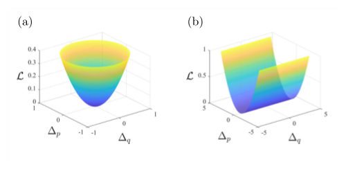
<figcaption class="paper-figure-caption"><b>Fig 1.</b> FIG. 1: Landscape deformation by trap potential in fluctuation-free dynamics. The landscapes are shown in the (∆q, ∆p) projection, with the remaining covariance fixed at its minimizing value. The axes are extended to negative values of ∆q and ∆p only for visualizing the landscape geometry, although physical variances are restricted to be nonnegative. (a) For ω ̸= 0, the fluctuation-free landscape is bowl-shaped and has a unique minimum, implying collapse of the wave packet in the long-time limit. Here the parameters are set as ω = γ = 1. (b) For ω = 0, the fluctuation-free landscape develops a flat valley of degenerate minima, reflecting translational symmetry in covariance space and...</figcaption>
</figure>
<figure class="paper-figure-card">
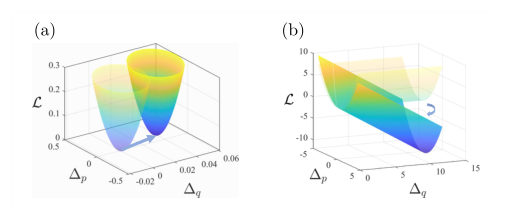
<figcaption class="paper-figure-caption"><b>Fig 2.</b> FIG. 2: Landscape deformation by fluctuation. The landscapes are shown in the (∆q, ∆p) projection, with the remaining covariance fixed at its minimizing value. The translucent surfaces denote the fluctuation-free landscapes, whereas the solid surfaces denote the landscapes deformed by bath fluctuations. The parameters are set as γ = 1, ∆qξ = ∆pξ = 0.5. (a) In the confined case, the fluctuation preserves the bowl topology but shifts its minimum away from the origin, leading to a stationary wave packet with finite width. (b) In the free-particle case, the fluctuation adds a linear term along the flat direction, tilts the fluctuation-free valley, removes the degenerate minimum manifold, and...</figcaption>
</figure>
</div>

<p><strong>Summary.</strong> This paper introduces a quantum landscape approach to analyze how wave packets evolve in open quantum systems. It shows that the long-time behavior—whether the packet collapses, localizes, or diffuses—is determined by the underlying geometry of a potential landscape in the covariance space. This geometric picture unifies these distinct dissipative quantum dynamics.</p>
<p><strong>Why it may be interesting.</strong> This work provides a powerful geometric framework to unify disparate phenomena (diffusion, localization, collapse) in open quantum systems, offering deeper physical insight than standard master equation treatments.</p>
<details>
<summary>Detailed structure</summary>
<p><strong>Main problem.</strong> To develop a quantum landscape approach to characterize the long-time behavior of wave packet spreading in linear open quantum systems.</p>
<p><strong>Main result.</strong> The long-time dynamics (diffusion, localization, collapse) are unified by the geometry of a potential landscape in covariance space, showing that symmetry breaking dictates the asymptotic behavior.</p>
<p><strong>Method.</strong> The dynamics of the covariance matrix are mapped onto a generalized gradient flow equation, $\dot{\sigma} = -M
abla L(\sigma)$, where $L$ is the quantum landscape function.</p>
<p><strong>Model / system.</strong> The system consists of linear open quantum systems, modeled by coupled harmonic oscillators interacting with a bath (Caldeira-Leggett type). The dynamics are governed by the quantum Langevin equation.</p>
<p><strong>Key observables.</strong> The covariance matrix $\Sigma$ (or its vectorization $\sigma$), and the position width $\Delta q(t)$.</p>
<p><strong>Important parameters / regimes.</strong> The oscillator frequency ($\omega$), damping rate ($\Gamma$), and the presence/strength of bath fluctuations ($\xi(t)$).</p>
<p><strong>Assumptions / limitations.</strong> The analysis relies on casting the covariance evolution into a gradient flow form and analyzing the zero modes of the system matrix.</p>
<p><strong>Figures summary.</strong> Figures illustrate the deformation of the landscape: a bowl shape for confined systems (implying collapse) versus a flat valley for free particles, which becomes tilted by fluctuations.</p>
<p><strong>Paper structure.</strong> The paper first introduces the landscape approach to the covariance dynamics, then analyzes specific cases (e.g., harmonic oscillator vs. free particle) to demonstrate how the landscape geometry dictates the asymptotic state, culminating in a discussion of symmetry breaking due to fluctuations.</p>
</details>
<details>
<summary>Abstract</summary>
<p>We develop a quantum landscape approach to characterize the long-time behavior of wave packet spreading in linear open quantum systems. Instead of treating diffusion, localization, and collapse of the wave packet as separate dynamical phenomena, we show that they originate from the symmetry structure of an underlying landscape in covariance space. The geometry of this landscape determines these distinct long time behaviors. Trapping potentials and bath fluctuations act as distinct symmetry-breaking perturbations, leading to noncommuting long-time limits and abrupt changes in the asymptotic wave-packet width. This geometric picture provides a unified origin for wave-packet diffusion, localization, and collapse in dissipative quantum dynamics.</p>
</details>
<p><sub><a href="#top">↑ back to top</a></sub></p>

<p><a id="paper-2605.15872"></a></p>
<h3 id="symmetry-breaking-and-high-dimensional-chaos-in-sparse-random-networks-of-exact-firing-rate-models"><a href="http://arxiv.org/abs/2605.15872v1">Symmetry breaking and high-dimensional chaos in sparse random networks of exact firing rate models</a></h3>
<p><strong>Authors:</strong> Pau Clusella<br>
<strong>Type:</strong> theory · <strong>Category:</strong> disordered systems and neural networks · <strong>PDF:</strong> <a href="https://arxiv.org/pdf/2605.15872v1">https://arxiv.org/pdf/2605.15872v1</a><br>
<strong>Analysis basis:</strong> full PDF text, analyzed in chunks
<strong>Topic relevance:</strong> <code>analog quantum simulation</code> <strong>1/5</strong> · <code>driven-dissipative phase transition</code> <strong>1/5</strong> · <code>methods for driven-dissipative</code> <strong>1/5</strong> · <code>non-equilibrium dynamics</code> <strong>1/5</strong> · <code>non-equilibrium universality</code> <strong>1/5</strong></p>
<div class="figure-strip-hint">↔ Scroll figures horizontally</div>
<div class="paper-figures-scroll">
<figure class="paper-figure-card">
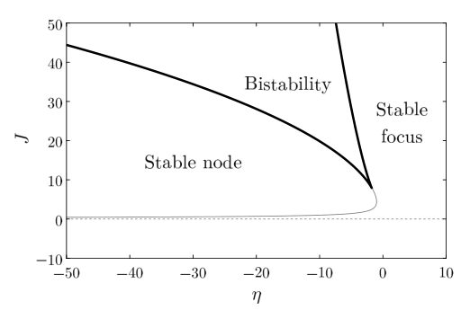
<figcaption class="paper-figure-caption"><b>Fig 1.</b> FIG. 1. Two-parameter bifurcation diagram of the homogeneous sys- tem (3). Black curves indicate saddle-node bifurcations, which join in a cusp codimension-2 bifurcation. Grey thin curve indicates the focus-node boundary of the stable fixed point.</figcaption>
</figure>
<figure class="paper-figure-card">
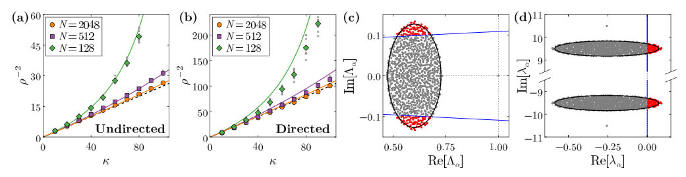
<figcaption class="paper-figure-caption"><b>Fig 2.</b> FIG. 2. Spectra of row-normalized connectivity matrices. (a,b) Scaling of the radius ρ for the Wigner’s semicircle (panel (a)) and Girko’s disk (panel (b)) distributions of the bulk of eigenvalues of C. Continuous lines show the results corresponding to Eqs. (7) and (7) for panels (a) and (b) respectively. Symbols correspond to averages over 10 different networks for each combination of κ and N, with grey dots showing the individual results. Black dashed lines indicate the asymptotic results ρ−2 = κ/4 (panel (a)) and ρ−2 = κ (panel (b)). (c) Spectra of a directed connectivity matrix C obtained for N = 1024, κ = 10, and µ = 0.6. Red circles indicate the eigenvalues corresponding to unstable...</figcaption>
</figure>
<figure class="paper-figure-card">
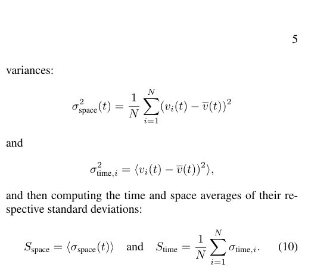
<figcaption class="paper-figure-caption"><b>Fig 3.</b> Figure 4(a) shows the heatmap of the spatial variability Sspace, together with the bifurcation line corresponding to N →∞(solid blue line), and the bifurcation obtained by using the maximal Λk for k &gt; 2 of the network in Eq. (6) (dashed blue curve). Heterogeneous states emerge in perfect agreement with the bifurcation obtained using the network spectra, but with a small offset with respect to the asymptotic model (solid curve). This difference can be traced back to the finite size error of the asymptotic relation given by Eq. (7). Remarkably, the dynamics in the region of instabilities are stationary everywhere (monitored with Stime, not shown). Figure 4(c) shows the time traces of three...</figcaption>
</figure>
<figure class="paper-figure-card">
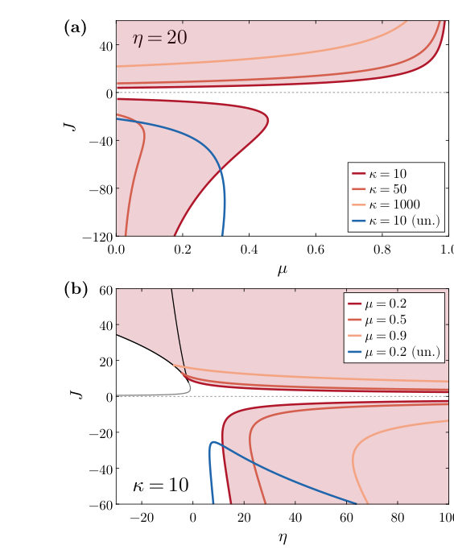
<figcaption class="paper-figure-caption"><b>Fig 4.</b> FIG. 3. Two-parameter bifurcation diagrams of the coupled system (1). (a) Red, salmon, and pink curves indicate the region of trans- verse instabilities for κ = 10, 50, and 1000 respectively, with fixed η = 20. The blue curve indicates the same result for an undirected network with κ = 10. Red shaded region shows the region of trans- verse instabilities for a directed network with κ = 10. (b) Red, salmon, and pink curves indicate the region of transverse instabili- ties for µ = 0.2, 0.5, and 0.9 respectively, with fixed κ = 10. The blue curve indicates the same result for an undirected network with µ = 0.2. Red shaded region shows the region of transverse insta- bilities for a directed...</figcaption>
</figure>
<figure class="paper-figure-card">
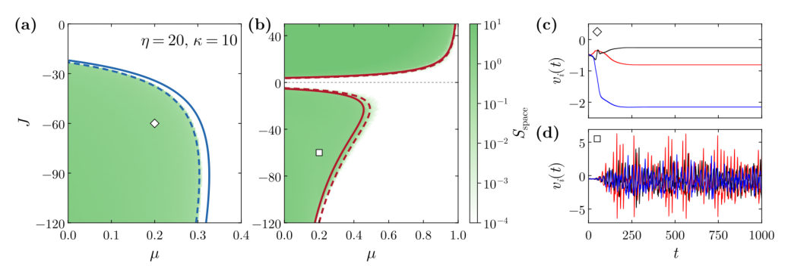
<figcaption class="paper-figure-caption"><b>Fig 5.</b> FIG. 4. Numerical validation of the bifurcation diagram. (a,b) Heatmaps of the spatial variability Sspace (Eq. (10)) for C corresponding to an undirected network (panel (a)) and directed network (panel (b)) with N = 128, κ = 10, and η = 20. Blue and red solid curve are as in Fig. 3(a). Blue and red dashed curve correspond to the stability boundaries given by Eq. (6) with the true values of Λk obtained from the network. (c,d) Time series of variable vi for three randomly selected nodes corresponding to the undirected (panel (c)) and directed (panel (d)) networks for (µ, J) = (0.2, −60) (see 3 and 2 symbols in panels (a) and (b) respectively).</figcaption>
</figure>
</div>

<p><strong>Summary.</strong> This work analyzes the collective dynamics of neural networks modeled by QIF neurons coupled on sparse random graphs. By combining linear stability analysis with random matrix theory, the authors predict the onset of instabilities, which manifest as high-dimensional chaos in directed networks. The findings establish a theoretical link between network topology, coupling parameters, and the emergence of complex, chaotic spatiotemporal activity.</p>
<p><strong>Why it may be interesting.</strong> The rigorous mathematical framework for analyzing collective dynamics in large, sparse, and disordered systems is highly relevant to understanding complex quantum many-body systems where local interactions lead to emergent global behavior.</p>
<details>
<summary>Detailed structure</summary>
<p><strong>Main problem.</strong> The study investigates the emergence of spatiotemporal patterns and high-dimensional chaos in coupled neural populations modeled by exact firing rate models on sparse random networks.</p>
<p><strong>Main result.</strong> The system exhibits extensive high-dimensional chaos in directed networks for both excitatory and inhibitory coupling, while undirected inhibitory networks show winner-takes-all steady states.</p>
<p><strong>Method.</strong> The analysis combines linear stability analysis of homogeneous states with random matrix theory to determine bifurcation boundaries, followed by Lyapunov exponent calculations to quantify chaos.</p>
<p><strong>Model / system.</strong> The model uses $N$ populations of Quadratic Integrate-and-Fire (QIF) neurons coupled via a sparse random network with row-normalized topology. The dynamics are governed by coupled differential equations.</p>
<p><strong>Key observables.</strong> Lyapunov exponents ($\ell_i$), Kaplan-Yorke fractal dimension ($D_{KY}$), and the dispersion relation linking growth rates to connectivity matrix eigenvalues ($\Lambda_k$).</p>
<p><strong>Important parameters / regimes.</strong> Coupling strength ($J$), network sparsity ($\kappa$), and the diagonal coupling parameter ($\mu$).</p>
<p><strong>Assumptions / limitations.</strong> The analysis assumes the system can be linearized around homogeneous states and utilizes the row-normalization constraint on the connectivity matrix.</p>
<p><strong>Figures summary.</strong> Figures illustrate bifurcation diagrams showing instability boundaries, and others map the dynamical landscape using Lyapunov exponents and the scaling of the fractal dimension with system size.</p>
<p><strong>Paper structure.</strong> The paper progresses from defining the QIF model and performing linear stability analysis to deriving spectral properties using random matrix theory, and finally characterizing the resulting dynamics using Lyapunov exponents to confirm high-dimensional chaos.</p>
</details>
<details>
<summary>Abstract</summary>
<p>Exact firing rate models, also known as next-generation neural mass models (NG-NMMs), provide a rigorous description of the dynamics of neural populations. While in its simplest form a single population only displays fixed-point activity, multi-population models may display a range of different behaviors. In this work, we study the dynamics of all-excitatory or all-inhibitory NG-NMMs coupled through sparse random networks with row-normalized network topology. Linear stability analysis of the homogeneous states of the system, representing asynchronous neural activity, provides a dispersion relation linking the emergence of spatiotemporal dynamics to the spectra of the connectivity matrix. Using bounds from random matrix theory, we identify the parameter regions where instabilities occur. In undirected networks, only inhibitory systems produce heterogeneous stationary patterns, corresponding to a winner-takes-all mechanism. In directed networks, exotic rhythmic states with high frequencies emerge in both, excitatory and inhibitory systems. Numerical simulations reveal that these hectic oscillatory states correspond to high-dimensional chaos with extensive properties.</p>
</details>
<p><sub><a href="#top">↑ back to top</a></sub></p>

<p><a id="paper-2605.15410"></a></p>
<h3 id="diagonal-adaptive-non-local-observables-on-quantum-neural-networks"><a href="http://arxiv.org/abs/2605.15410v1">Diagonal Adaptive Non-local Observables on Quantum Neural Networks</a></h3>
<p><strong>Authors:</strong> Huan-Hsin Tseng, Yan Li, Hsin-Yi Lin, Samuel Yen-Chi Chen<br>
<strong>Type:</strong> both · <strong>Category:</strong> quantum information and computing · <strong>PDF:</strong> <a href="https://arxiv.org/pdf/2605.15410v1">https://arxiv.org/pdf/2605.15410v1</a><br>
<strong>Analysis basis:</strong> full PDF text, analyzed in chunks
<strong>Topic relevance:</strong> <code>analog quantum simulation</code> <strong>1/5</strong> · <code>entanglement &amp; information structure</code> <strong>1/5</strong> · <code>quantum measurements</code> <strong>1/5</strong></p>
<div class="figure-strip-hint">↔ Scroll figures horizontally</div>
<div class="paper-figures-scroll">
<figure class="paper-figure-card">
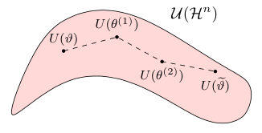
<figcaption class="paper-figure-caption"><b>Fig 1.</b> Fig. 2: The training process searching for optimal circuit U(eθ) results in observable changes θ 7→H(θ) := U †(θ) H U(θ).</figcaption>
</figure>
<figure class="paper-figure-card">
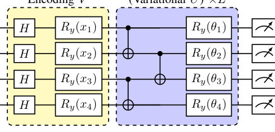
<figcaption class="paper-figure-caption"><b>Fig 2.</b> Fig. 1: A VQC diagram of (11), (12), which is also imple- mented in Sec. IV. The variational block represented by a blue box is repeated L times to increase the circuit depth.</figcaption>
</figure>
<figure class="paper-figure-card">
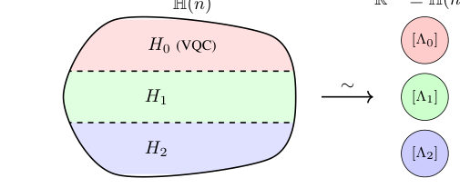
<figcaption class="paper-figure-caption"><b>Fig 3.</b> Fig. 3: Observable space H(n) is partitioned into equivalent classes labeled by R2n. In other words, H(n) is classified by its eigenvalues, and VQC falls in only one particular class.</figcaption>
</figure>
<figure class="paper-figure-card">
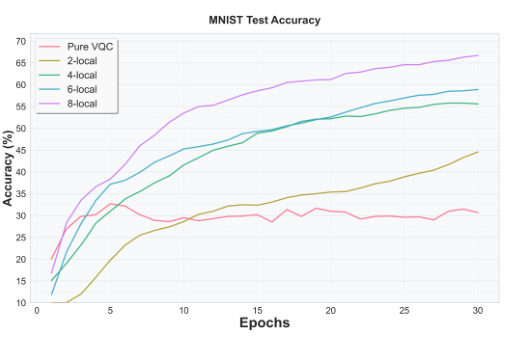
<figcaption class="paper-figure-caption"><b>Fig 4.</b> Fig. 5: [MNIST test accuracy.] All models share the same VQC architecture. Increasing measurement non-locality im- proves test accuracy over the fixed-Pauli baseline (pure VQC).</figcaption>
</figure>
<figure class="paper-figure-card">
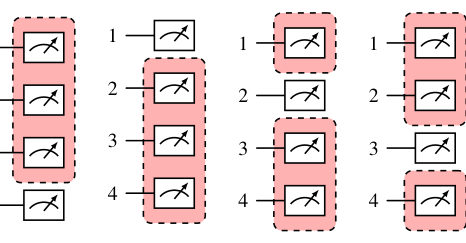
<figcaption class="paper-figure-caption"><b>Fig 5.</b> Fig. 4: Sliding k-local DANO measurements of k = 3, n = 4.</figcaption>
</figure>
</div>

<p><strong>Summary.</strong> This paper introduces Diagonal Adaptive Non-local Observables (DANO) to enhance Variational Quantum Algorithms by making the measurement observable trainable. By restricting the observable to a diagonal form, DANO significantly reduces the classical computational cost and parameter count compared to general methods, while mathematically retaining the full expressive power of the original approach. This makes complex, high-locality quantum machine learning tasks feasible on near-term hardware.</p>
<p><strong>Why it may be interesting.</strong> While focused on QML, the core technique of parameterizing observables via restricted structures (diagonalization) and proving equivalence to a larger space is relevant to understanding constraints and effective Hamiltonians in open quantum systems or when modeling complex interactions in condensed matter.</p>
<details>
<summary>Detailed structure</summary>
<p><strong>Main problem.</strong> To improve Variational Quantum Algorithms (VQAs) by enlarging the function space beyond the circuit ansatz alone, while mitigating the exponential increase in parameters and classical optimization cost associated with general trainable observables.</p>
<p><strong>Main result.</strong> The proposed Diagonal Adaptive Non-local Observables (DANO) framework achieves the full expressivity of general Adaptive Non-local Observables (ANO) while reducing the observable parameter complexity from $O(4^k)$ to $O(2^k)$, making large-scale measurements practical.</p>
<p><strong>Method.</strong> The authors restrict the trainable observable $H$ to a diagonal form $\Lambda$, which is mathematically shown to be equivalent in expressivity to the full ANO space under certain conditions.</p>
<p><strong>Model / system.</strong> The work focuses on Quantum Neural Networks (QNNs) implemented via Variational Quantum Circuits (VQCs) trained on NISQ devices. The model involves training parameters $    heta$ for the unitary circuit $U(	heta)$ alongside parameters $\lambda$ for the diagonal observable $\Lambda(\lambda)$.</p>
<p><strong>Key observables.</strong> The expectation values of the trainable diagonal observables $\Lambda_j$, which are measured via sliding $k$-local measurements.</p>
<p><strong>Important parameters / regimes.</strong> The locality $k$ of the observable, the number of qubits $n$, and the circuit parameters $  heta$ and observable parameters $\lambda$.</p>
<p><strong>Assumptions / limitations.</strong> The core assumption is that restricting the observable to a diagonal form retains full ANO expressivity, which is supported by a density proof relying on the circuit generating set spanning $SU(K)$.</p>
<p><strong>Figures summary.</strong> Figures illustrate the VQC structure, the training trajectory involving observable changes, and the partitioning of the observable space. Tables summarize performance gains on MNIST and Yale B face recognition when using DANO vs. pure VQC.</p>
<p><strong>Paper structure.</strong> The paper first introduces the challenge of ANO, then proposes DANO by restricting observables to diagonal forms. It provides theoretical guarantees of expressivity equivalence, followed by empirical validation on classification tasks (MNIST and Yale B) demonstrating performance gains and cost reductions.</p>
</details>
<details>
<summary>Abstract</summary>
<p>Adaptive Non-local Observables (ANOs) have shown that making quantum observables dynamic can substantially enlarge the function space of Variational Quantum Algorithms, partly shifting hardware demands from circuit synthesis to measurement design. However, this advantage is accompanied by a steep increase in the number of parameters, as well as the classical optimization cost for varying general Hermitian observables.   We propose a special form of ANO that significantly reduces this burden by considering only diagonal observables paired with quantum circuits. Mathematically, this is equivalent to the full ANO of a large parameter space since diagonal matrices are canonical representatives of the ANO space modulo unitary similarity. As a result, Diagonal ANO retains the same capability of full ANO while reducing $k$-local observable complexity from $O(4^k)$ to $O(2^k)$ and lowering the corresponding measurement-side classical computation. In this sense, diagonal ANO preserves much of the benefit of full ANO while encompassing conventional VQCs as a special case.</p>
</details>
<p><sub><a href="#top">↑ back to top</a></sub></p>

<p><a id="paper-2605.15495"></a></p>
<h3 id="itinerant-antiferromagnetism-in-the-antagonistic-pair-compound-ymath614mathcomath615mathag"><a href="http://arxiv.org/abs/2605.15495v1">Itinerant antiferromagnetism in the antagonistic pair compound Y$_4$Co$_3$Ag</a></h3>
<p><strong>Authors:</strong> Rafaela F. S. Penacchio, Nao Furukawa, Joanna M. Blawat, John Singleton, Zhouqi Li, Raquel A. Ribeiro, Sérgio L. Morelhão, Sergey L. Bud'ko, Paul C. Canfield, Tyler J. Slade<br>
<strong>Type:</strong> experiment · <strong>Category:</strong> strongly correlated electrons · <strong>PDF:</strong> <a href="https://arxiv.org/pdf/2605.15495v1">https://arxiv.org/pdf/2605.15495v1</a><br>
<strong>Analysis basis:</strong> full PDF text, analyzed in chunks
<strong>Topic relevance:</strong> <code>analog quantum simulation</code> <strong>1/5</strong> · <code>exotic spin models in light-matter</code> <strong>1/5</strong> · <code>spintronics-quantum-optics interface</code> <strong>1/5</strong></p>
<div class="figure-strip-hint">↔ Scroll figures horizontally</div>
<div class="paper-figures-scroll">
<figure class="paper-figure-card">
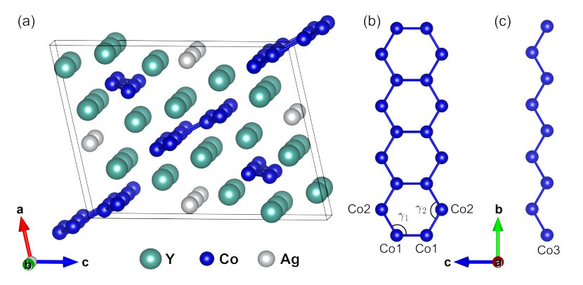
<figcaption class="paper-figure-caption"><b>Fig 1.</b> FIG. 1. Crystal structure of Y4Co3Ag. (a) A view of the crystal structure along the b-axis, emphasizing the complete sheathing of Co by Y atoms with no nearest-neighbor Co-Ag contacts. Both Y and Ag form linear chains running along the b-axis of the monoclinic (I2/m) unit cell. To highlight these chains, (a) shows a projection of two unit cells along the (010) direction. The intrachain distance between two Y or two Ag atoms is 3.9197(3) ˚A, i.e., the unit cell length in the (010) direction. The Co ions form both (b) hexagonal and (c) zigzag chains that occupy the channels formed by Y. Co-Co distances within the hexagonal chains are dCo1-Co1 = 2.3432(6) ˚A and dCo1-Co2 = 2.2893(6) ˚A,...</figcaption>
</figure>
<figure class="paper-figure-card">
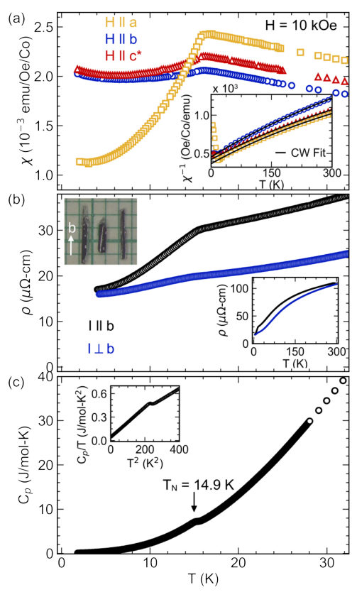
<figcaption class="paper-figure-caption"><b>Fig 2.</b> FIG. 2. Low-temperature physical properties of Y4Co3Ag. (a) Anisotropic temperature-dependent magnetic susceptibil- ity χ = M/H. The inset shows χ−1, and the solid curves are the Curie-Weiss fits (see text) to the data. (b) Temperature dependence of the electrical resistivity ρ measured with cur- rent applied parallel (black) and perpendicular (blue) to the b-axis. The right inset shows ρ(T) for T = 1.8–300 K, and the left inset shows a picture of typical rod-like Y4Co3Ag crystals on a mm-scale grid. (c) Temperature dependence of the molar heat capacity, Cp, for temperatures 1.8 ≤T ≤32 K. The in- set shows Cp/T against T 2, showing linear dependence below TN, and yielding γ = 50.1(5)...</figcaption>
</figure>
<figure class="paper-figure-card">
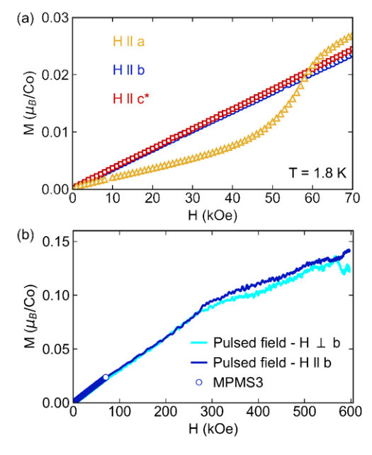
<figcaption class="paper-figure-caption"><b>Fig 3.</b> FIG. 3. Field-dependent magnetization isotherms for Y4Co3Ag measured at (a) T = 1.8 K in a DC field and (b) 500 mK (solid curves) in a pulsed field. The points (open cir- cles) in (b) show the low-field data used to scale the pulsed- field data (see Methods).</figcaption>
</figure>
</div>

<p><strong>Summary.</strong> This paper reports on the synthesis and characterization of Y4Co3Ag, a novel compound designed to host quasi-one-dimensional Co chains. Through magnetic and transport measurements, the authors establish that the material orders antiferromagnetically at 14.9 K, exhibiting signatures of itinerant magnetism. The findings suggest Y4Co3Ag is a promising platform for investigating magnetic interactions in low-dimensional correlated electron systems.</p>
<p><strong>Why it may be interesting.</strong> The work provides an experimental realization of designing magnetic materials based on structural motifs (antagonistic pairs) to isolate and study specific magnetic interactions, which is highly relevant for understanding correlated electron physics in low dimensions.</p>
<details>
<summary>Detailed structure</summary>
<p><strong>Main problem.</strong> The study investigates the nature of antiferromagnetism in the novel compound Y4Co3Ag, aiming to characterize its magnetic interactions within a quasi-one-dimensional structure.</p>
<p><strong>Main result.</strong> The material exhibits antiferromagnetic ordering at $T_N=14.9$ K, suggesting the presence of small, itinerant magnetic moments and strong magnetic fluctuations in a low-dimensional Co chain system.</p>
<p><strong>Method.</strong> The research employed a combination of structural characterization (XRD) and multiple physical measurements, including temperature-dependent resistivity, specific heat, and high/low-field magnetization.</p>
<p><strong>Model / system.</strong> The physical system is the intermetallic compound Y4Co3Ag, which crystallizes in a monoclinic structure featuring one-dimensional Co chains running along the b-axis, designed using the 'antagonistic pair' concept to avoid Co-Ag nearest-neighbor contacts.</p>
<p><strong>Key observables.</strong> Antiferromagnetic ordering temperature ($T_N$), effective magnetic moment ($\mu_{	ext{eff}}$), specific heat anomaly, and magnetization isotherms $M(H)$.</p>
<p><strong>Important parameters / regimes.</strong> The system is characterized by quasi-one-dimensional Co chains, exhibiting itinerant magnetic behavior, and the magnetic coupling is analyzed via Curie-Weiss fits ($\Theta/T_N$ ratio).</p>
<p><strong>Assumptions / limitations.</strong> The primary assumption is that the structural design successfully isolates the Co chains, allowing the study of itinerant magnetism in a quasi-1D setting. Contamination from the growth crucible ($ ext{Al}$) is also analyzed as a systematic perturbation.</p>
<p><strong>Figures summary.</strong> Figures show crystal structures, temperature dependence of $\chi$, $
ho$, and $C_p$ around $T_N=14.9$ K. Magnetization isotherms $M(H)$ are presented for various fields and temperatures, comparing results from different growth conditions (Ta vs. $  ext{Al}_2   ext{O}_3$).</p>
<p><strong>Paper structure.</strong> The paper first introduces the material and its structure based on the antagonistic pair concept. It then presents comprehensive measurements (transport, magnetic, specific heat) confirming antiferromagnetic ordering. The analysis focuses on interpreting these results to classify the magnetism as itinerant, contrasting it with localized models, and finally discusses the sensitivity of the magnetic properties to sample growth conditions.</p>
</details>
<details>
<summary>Abstract</summary>
<p>Low dimensional crystallographic motifs have long been associated with desirable physical properties. The confinement of electrons to low dimensions is thought to enhance quantum fluctuations and may promote correlated phenomena. Here, using the antagonistic pair concept, we add Y to the immiscible Co-Ag pair to discover Y$_4$Co$_3$Ag. This compound adopts a monoclinic $I$2/$m$ structure consisting of Y channels that are filled by one-dimensional zigzag and hexagonal Co chains, which extend along the crystallographic $b$-axis with no nearest neighbor contacts between Co and Ag atoms. Transport, magnetic, and specific heat measurements reveal that Y$_4$Co$_3$Ag orders antiferromagnetically at $T_N=14.9$ K with an effective magnetic moment $μ_{\text{eff}}$ = 1.4 $μ_{\text{B}}$/Co. Specific heat measurements show only a small entropy loss on the order of $0.1\,R\ln2$ associated with magnetic order, and magnetization isotherms, in DC fields up to 70 kOe at 1.8 K and in pulsed fields up to 600 kOe at 500 mK, indicate a small ordered moment of less than 0.2 $μ_B$/Co. Taken together, our results imply the presence of small, itinerant moments and strong fluctuations in Y$_4$Co$_3$Ag, suggesting that Y$_4$Co$_3$Ag may be a promising candidate material to investigate itinerant magnetic interactions in a quasi-one dimensional system.</p>
</details>
<p><sub><a href="#top">↑ back to top</a></sub></p>

<p><a id="paper-2605.15979"></a></p>
<h3 id="hybrid-quantum-classical-density-functional-theory-a-structured-framework"><a href="http://arxiv.org/abs/2605.15979v1">Hybrid Quantum-Classical Density Functional Theory: A Structured Framework</a></h3>
<p><strong>Authors:</strong> Namrata Manglani, Samrit Kumar Maity, Shashank Sharma, Soham Phulare, Sanjay Wandhekar<br>
<strong>Type:</strong> theory · <strong>Category:</strong> strongly correlated electrons · <strong>PDF:</strong> <a href="https://arxiv.org/pdf/2605.15979v1">https://arxiv.org/pdf/2605.15979v1</a><br>
<strong>Analysis basis:</strong> full PDF text, analyzed in chunks
<strong>Topic relevance:</strong> <code>Keldysh / 2PI / non-Gaussian methods</code> <strong>1/5</strong> · <code>analog quantum simulation</code> <strong>1/5</strong></p>
<div class="figure-strip-hint">↔ Scroll figures horizontally</div>
<div class="paper-figures-scroll">
<figure class="paper-figure-card">
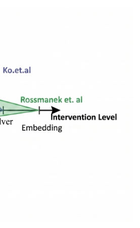
<figcaption class="paper-figure-caption"><b>Fig 1.</b> Fig. 1. Design space for HQ-DFT. The planes in the design space are representative studies</figcaption>
</figure>
<figure class="paper-figure-card">
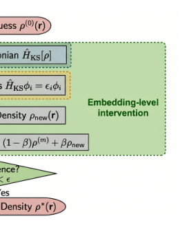
<figcaption class="paper-figure-caption"><b>Fig 2.</b> Fig. 2. Intervention levels shown at the SCF workflow</figcaption>
</figure>
</div>

<p><strong>Summary.</strong> This paper introduces a comprehensive, structured framework for Hybrid Quantum-Classical DFT (HQ-DFT) to overcome the limitations of classical DFT methods. By organizing research along axes of intervention level, functional role, and hardware capability, it guides researchers on the most promising near-term quantum approaches. It is crucial for advancing accurate simulations of strongly correlated electronic systems.</p>
<p><strong>Why it may be interesting.</strong> This work directly addresses the computational bottlenecks in simulating strongly correlated materials by systematically mapping out how quantum computation can be integrated, providing a roadmap for future theoretical work.</p>
<details>
<summary>Detailed structure</summary>
<p><strong>Main problem.</strong> Density Functional Theory (DFT) suffers from limitations due to inaccurate exchange-correlation functionals and high computational scaling ($ ext{O}(N^3)$).</p>
<p><strong>Main result.</strong> The authors propose a structured, three-dimensional framework to organize and evaluate hybrid quantum-classical DFT (HQ-DFT) efforts.</p>
<p><strong>Method.</strong> They introduce a structured design space based on the intervention level (Hamiltonian, Solver, Embedding), the quantum role (Accuracy vs. Acceleration), and the hardware regime (NISQ vs. Fault-Tolerant).</p>
<p><strong>Model / system.</strong> The focus is on electronic structure calculations, particularly for systems exhibiting strong electronic correlation, such as transition-metal oxides or $f$-electron compounds.</p>
<p><strong>Key observables.</strong> Accuracy (treating electron correlation), Computational Cost (scaling reduction), and Convergence.</p>
<p><strong>Important parameters / regimes.</strong> NISQ (Noisy) vs. Fault-Tolerant (FTQC) hardware regimes; the size of the correlated region (fragment size).</p>
<p><strong>Assumptions / limitations.</strong> The need for a structured framework is highlighted because current research efforts are scattered across various quantum-classical integration points.</p>
<p><strong>Figures summary.</strong> Figure 1 illustrates the proposed three-axis design space for HQ-DFT. Figure 2 maps intervention levels within the Self-Consistent Field (SCF) workflow.</p>
<p><strong>Paper structure.</strong> The paper first outlines DFT limitations, then proposes the three-dimensional design space, analyzes existing methods within this space, and concludes with guidelines on near-term viability.</p>
</details>
<details>
<summary>Abstract</summary>
<p>Density Functional Theory (DFT) is widely used for atomistic simulations. However, its reach stays limited due to several limitations such as lack of accurate exchange-correlation functional, requirement of costly O(N 3) diagonalization etc. Although quantum computing offers paths forward, including variational techniques, embedding strategies, and quantum linear solvers, the discussion remains scattered. Without shared terms or structure, evaluating progress in hybrid quantum-classical DFT efforts becomes challenging. To bring order, we introduce a three-axis scheme based on where the method connects into DFT, whether the quantum part boosts precision or cuts time, alongside intended device type: current noisy machines or future error-corrected ones. Sorting known approaches in this way shows why embedding frameworks fit modern tools better, while faster linear algebra waits for more advanced systems.</p>
</details>
<p><sub><a href="#top">↑ back to top</a></sub></p>

<p><a id="paper-2605.16091"></a></p>
<h3 id="machine-learning-potential-as-a-guide-for-eutectic-in-ultra-refractory-multicomponent-ceramics"><a href="http://arxiv.org/abs/2605.16091v1">Machine learning potential as a guide for eutectic in ultra-refractory multicomponent ceramics</a></h3>
<p><strong>Authors:</strong> V. E. Valiulin, A. V. Mikheyenkov, N. M. Chtchelkatchev, E. A. Levashov<br>
<strong>Type:</strong> theory · <strong>Category:</strong> disordered systems and neural networks · <strong>PDF:</strong> <a href="https://arxiv.org/pdf/2605.16091v1">https://arxiv.org/pdf/2605.16091v1</a><br>
<strong>Analysis basis:</strong> full PDF text, analyzed in chunks
<strong>Topic relevance:</strong> <code>methods for driven-dissipative</code> <strong>1/5</strong> · <code>non-equilibrium dynamics</code> <strong>1/5</strong></p>
<div class="figure-strip-hint">↔ Scroll figures horizontally</div>
<div class="paper-figures-scroll">
<figure class="paper-figure-card">
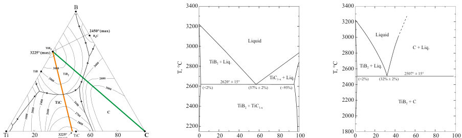
<figcaption class="paper-figure-caption"><b>Fig 1.</b> FIG. 1. (a) Pseudo-binary sections under consideration are colored as follows: orange for Line 1 and green for Line 2; (b) Pseudo-binary section TiB2-TiC0.95 herein Line 1; (c)Pseudo-binary section TiB2-C, herein Line 2. The Figures are drawn according to the data from [42].</figcaption>
</figure>
<figure class="paper-figure-card">
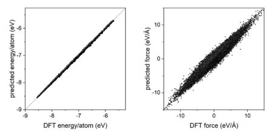
<figcaption class="paper-figure-caption"><b>Fig 2.</b> FIG. 2. Validation of the machine-learning interatomic po- tential (MLIP) accuracy. The figure reports the model’s performance on the combined training and test datasets. When evaluated strictly on the held-out test configurations, the model achieves a root-mean-square error (RMSE) of 14.2 meV/atom for energy and 0.5 eV/˚A for forces. The re- ported force error is relatively high, which can be attributed to the complexity of simulating a high-temperature liquid alloy composed of chemically distinct elements (Ti, alongside the inherently incompressible elements boron and carbon), com- bined with the use of a limited training dataset. Nevertheless, the potential successfully passes a series...</figcaption>
</figure>
<figure class="paper-figure-card">
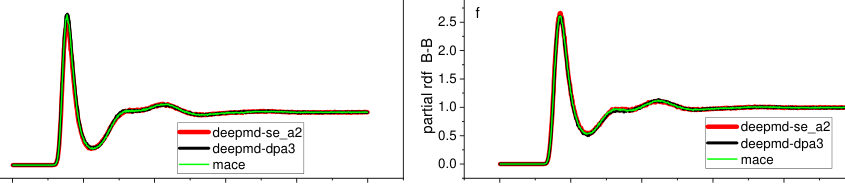
<figcaption class="paper-figure-caption"><b>Fig 3.</b> FIG. 3. Accuracy assessment of the DeepMD-se-a2 MLIP via radial distribution function (RDF) benchmark. Total and partial radial distribution functions for a liquid Ti40B40C20 alloy (obtained as a 1:1 molar mixture of TiB2 and TiC) at T = 4000 K. The computationally efficient descriptor-based DeepMD-se-a2 potential is compared against two high-accuracy graph-based foundation models, DeepMD-DPA3 (DPA-3.1-3M) and MACE (mace-mp-0b3-medium), both fine-tuned on the DeepMD-se-a2 training dataset. The close agreement between all calculated RDFs confirms the accuracy of the optimized DeepMD-se-a2 MLIP, despite its relatively high reported force error of 0.5 eV/˚A. Additional benchmarks are presented...</figcaption>
</figure>
<figure class="paper-figure-card">
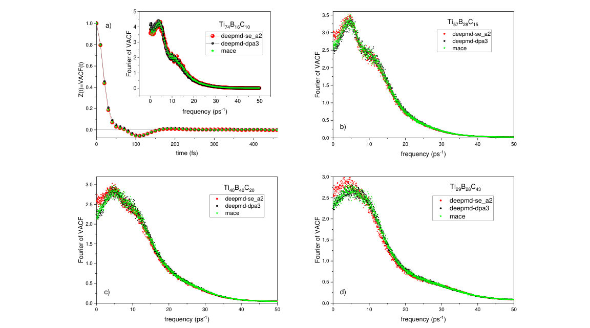
<figcaption class="paper-figure-caption"><b>Fig 4.</b> FIG. 4. Accuracy assessment of the DeepMD-se-a2 MLIP via velocity autocorrelation function (VACF) benchmark. The computationally efficient descriptor-based DeepMD-se-a2 potential is compared against two different high-accuracy graph- based MLIP foundation models DeepMD-DPA3 (DPA-3.1-3M) and MACE (mace-mp-0b3-medium), both fine-tuned on the DeepMD-se-a2 training-test dataset. (a) VACF for a liquid Ti74B16C10 alloy at T = 4000 K, computed in the NVT ensemble. The inset shows the Fourier transform of the VACF; the low-frequency noise is attributed to the finite simulation trajectory length (10 ps). For panels (b)–(d), computations were performed in the NPT ensemble. The larger discrepancy...</figcaption>
</figure>
<figure class="paper-figure-card">
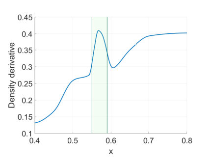
<figcaption class="paper-figure-caption"><b>Fig 5.</b> FIG. 5. The derivative of density by concentration as the function of concentration in Line 1 is shown (density in g/cm3</figcaption>
</figure>
</div>

<p><strong>Summary.</strong> This work proposes using machine learning potentials to overcome the experimental difficulty of finding eutectic points in ultra-refractory alloys. By simulating the supercooled liquid state, the authors identified characteristic signatures in the concentration derivatives of thermodynamic and transport properties. This provides a powerful, computationally guided tool for materials discovery in extreme conditions.</p>
<p><strong>Why it may be interesting.</strong> While focused on condensed matter thermodynamics, the core methodology—using deep learning potentials to model complex, high-temperature, multi-component liquid states—is highly relevant to simulating non-equilibrium dynamics in quantum many-body systems.</p>
<details>
<summary>Detailed structure</summary>
<p><strong>Main problem.</strong> The primary challenge is determining eutectic points in ultra-refractory multicomponent ceramics, as conventional melting experiments are too costly and technically difficult for materials with melting points exceeding 3000 K.</p>
<p><strong>Main result.</strong> The authors successfully demonstrated that a machine-learning interatomic potential (MLIP) can accurately predict eutectic compositions by analyzing liquid-phase thermodynamic and transport properties.</p>
<p><strong>Method.</strong> The approach uses MLIPs, trained on DFT data, to simulate the supercooled liquid state and identify eutectic regions by analyzing concentration derivatives of properties like density and energy.</p>
<p><strong>Model / system.</strong> The study focuses on the Ti-B-C system, analyzing pseudo-binary sections ($ ext{TiB}_2- ext{TiC}$ and $ ext{TiB}_2- ext{C}$). The core computational tool is a neural network-based MLIP, validated against high-accuracy DFT methods.</p>
<p><strong>Key observables.</strong> Physical density, total energy, diffusion coefficient, bulk modulus, and viscosity coefficient, analyzed via their concentration derivatives.</p>
<p><strong>Important parameters / regimes.</strong> Ultra-refractory temperature regimes (above 3000 K); the supercooled liquid state ($T=2500$ K) is used for simulation.</p>
<p><strong>Assumptions / limitations.</strong> The method assumes that local extrema in the concentration derivatives of liquid properties reliably pinpoint the eutectic composition, bypassing the need for solid-state structural information.</p>
<p><strong>Figures summary.</strong> Figures show pseudo-binary sections and liquid phase diagrams, MLIP performance metrics (RMSE), and plots illustrating the concentration dependence of various properties (density, energy, etc.) highlighting the eutectic region.</p>
<p><strong>Paper structure.</strong> The paper introduces the problem, details the MLIP methodology (training, validation against other ML potentials), applies the method to the Ti-B-C system, and concludes by showing that characteristic anomalies in liquid properties confirm the eutectic location.</p>
</details>
<details>
<summary>Abstract</summary>
<p>The experimental determination of eutectic points is a long-established and widely used technique, but it is generally only practical for systems with relatively low melting points. Many modern, promising materials, however, are ultra-refractory, with melting points exceeding 3000 K. For these systems, conventional melting experiments become prohibitively expensive and technically challenging. Advanced AI modeling can serve as a powerful precursor to guide successful experimentation in such cases. This work proposes a novel criterion for determining the eutectic point concentration in ultra-refractory alloys. The approach is verified using the Ti-B-C system - the most thoroughly studied three-component refractory system to date. The core of the algorithm is a machine-learning interatomic potential, based on a neural network, which achieves accuracy comparable to ab initio methods. Crucially, the algorithm operates effectively in the liquid phase, eliminating the need for information about the solid alloy's crystalline structure to estimate eutectic points.</p>
</details>
<p><sub><a href="#top">↑ back to top</a></sub></p>

<p><a id="paper-2605.16018"></a></p>
<h3 id="benchmarking-empirical-and-machine-learned-interatomic-potentials-using-phase-diagram-predictions-for-lead"><a href="http://arxiv.org/abs/2605.16018v1">Benchmarking empirical and machine-learned interatomic potentials using phase diagram predictions for Lead</a></h3>
<p><strong>Authors:</strong> Tom Hellyar, Pascal T. Salzbrenner, Peter I. C. Cooke, Chris J. Pickard, Scott Habershon, Livia B. Pártay<br>
<strong>Type:</strong> theory · <strong>Category:</strong> statistical mechanics · <strong>PDF:</strong> <a href="https://arxiv.org/pdf/2605.16018v1">https://arxiv.org/pdf/2605.16018v1</a><br>
<strong>Analysis basis:</strong> full PDF text, analyzed in chunks
<strong>Topic relevance:</strong> <code>Keldysh / 2PI / non-Gaussian methods</code> <strong>1/5</strong></p>
<div class="figure-strip-hint">↔ Scroll figures horizontally</div>
<div class="paper-figures-scroll">
<figure class="paper-figure-card">
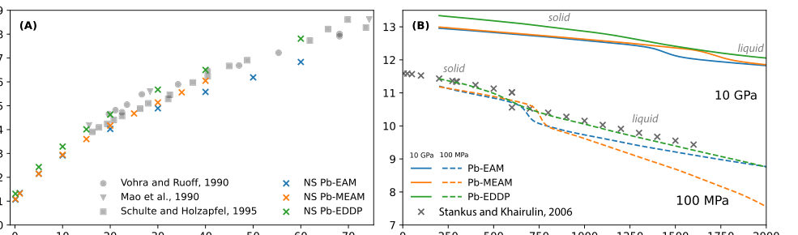
<figcaption class="paper-figure-caption"><b>Fig 1.</b> FIG. 1. (A) Density of solid lead at 300 K, as a function of pressure. Grey symbols show experimental results from Vohra and Ruoff [51], Mao [33], and Schulte and Holzapfel [52]. Coloured crosses are densities calculated from the NS calculations for the three different studied potentials. (B) Density of lead at constant pressure. Grey crosses show experimental results from Stankus and Khairulin [53], obtained at atmospheric pressure. Lines show the density from NS calculations at 100 MPa (dashed lines) and 10 GPa (solid lines) for the three tested potential models.</figcaption>
</figure>
<figure class="paper-figure-card">
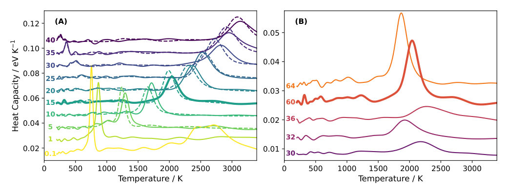
<figcaption class="paper-figure-caption"><b>Fig 2.</b> FIG. 2. Constant-pressure heat capacity of the simulated systems as a function of temperature, using the Pb-MEAM model. Solid and dashed lines represent calculations performed using standard NS and RENS, respectively. (A) Different pressures, with values displayed in GPa by each curve, with a 60-particle system size. Heat capacity values are shifted up by 0.01 eV K−1 for each increasing pressure, to assist readability. (B) Different system sizes (with atom counts shown by each curve) at 15 GPa. Heat capacity is shifted as a function of system size (increased by 0.005 eV K−1 for each successive system size). The 15 GPa, 60-atom NS curves in each panel (representing the same run) are shown...</figcaption>
</figure>
<figure class="paper-figure-card">
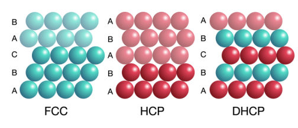
<figcaption class="paper-figure-caption"><b>Fig 3.</b> FIG. 3. Schematic illustration of polytype face-centred cubic (FCC), hexagonal close-packed (HCP), and double hexagonal close-packed (dHCP) structures. ABC notation on the left marks the relative stack- ing position, with layers sandwiched by two different stackings in blue, and layers sandwiched by two sheets of atoms in the same rel- ative position coloured red.</figcaption>
</figure>
<figure class="paper-figure-card">
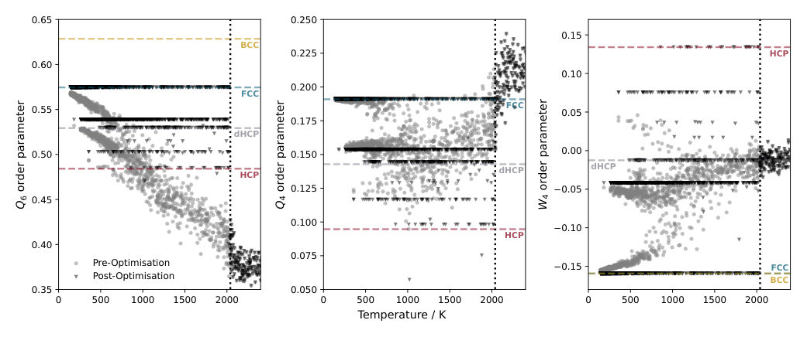
<figcaption class="paper-figure-caption"><b>Fig 4.</b> FIG. 4. Configuration-averaged Steinhardt bond order parameters of an exemplar NS run (15 GPa, Pb-MEAM, 60 atoms). Values for raw NS configurations are shown by grey circles, while the order parameter values after the geometry optimisation are shown by black triangles. Optimal crystal structure values for FCC, HCP, dHCP and BCC are shown by horizontal dashed lines. The melting temperature at this pressure is marked with a vertical dotted line.</figcaption>
</figure>
<figure class="paper-figure-card">
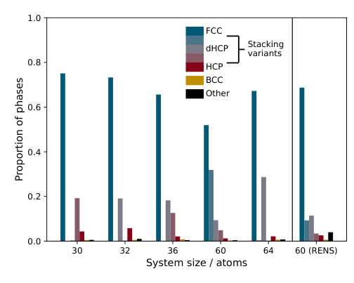
<figcaption class="paper-figure-caption"><b>Fig 5.</b> FIG. 5. Relative proportions of FCC, HCP, BCC and stacking vari- ants observed for different system sizes in 15 GPa MEAM NS runs and for a 60-atom RENS calculation.</figcaption>
</figure>
</div>

<p><strong>Summary.</strong> This work compares three interatomic potentials—EAM, MEAM, and a machine-learned EDDP—to map the high-pressure phase diagram of Lead. By using advanced sampling methods like Nested Sampling, the authors demonstrate that MLIPs are superior to empirical potentials because they accurately predict key solid-solid phase transitions. This validates the use of MLIPs combined with rigorous statistical mechanics sampling for predictive materials science.</p>
<p><strong>Why it may be interesting.</strong> While focused on condensed matter, the rigorous application of advanced sampling techniques (NS/RENS) to calculate partition functions and phase stability is highly relevant to theoretical physics dealing with complex many-body systems.</p>
<details>
<summary>Detailed structure</summary>
<p><strong>Main problem.</strong> The paper benchmarks different interatomic potentials (empirical vs. machine-learned) to accurately predict the phase behavior and phase transitions of Lead under high pressure.</p>
<p><strong>Main result.</strong> The machine-learned potential (EDDP) successfully captured the experimentally-observed FCC-to-HCP transition at $\sim 15 	ext{ GPa}$, whereas the empirical potentials failed to do so, highlighting the importance of model flexibility.</p>
<p><strong>Method.</strong> The study employs advanced simulation techniques like Nested Sampling (NS) and Replica-Exchange Nested Sampling (RENS) to calculate thermodynamic properties and map the Pressure-Temperature phase diagram.</p>
<p><strong>Model / system.</strong> The physical system is elemental Lead (Pb). The models compared are the Embedded Atom Method (EAM), Modified EAM (MEAM), and an Ephemeral Data-Derived Potential (EDDP), a neural network-based MLIP.</p>
<p><strong>Key observables.</strong> Density ($
ho$), Heat Capacity ($C_p$), Phase transition pressures (e.g., FCC $\leftrightarrow$ HCP), and relative free energy differences between solid phases.</p>
<p><strong>Important parameters / regimes.</strong> Pressures up to 60 GPa, Temperatures, and the specific training data used for the MLIPs.</p>
<p><strong>Assumptions / limitations.</strong> The analysis relies on the assumption that the MLIPs can accurately represent the potential energy surface, and that the simulation methods (NS/RENS) provide an unbiased sampling of the phase space.</p>
<p><strong>Figures summary.</strong> Figures summarize density comparisons, heat capacity vs. temperature curves showing solid-liquid and solid-solid transitions, and P-T phase diagrams comparing the predictions of the three potentials.</p>
<p><strong>Paper structure.</strong> The paper systematically compares the predictions of EAM, MEAM, and EDDP across multiple thermodynamic regimes, using NS/RENS to calculate thermodynamic observables and structural order parameters to identify stable phases.</p>
</details>
<details>
<summary>Abstract</summary>
<p>We compare the predicted phase behaviour of lead (Pb) using three different interatomic potential models, including an embedded atom method (EAM), a modified embedded atom method (MEAM), and a neural network-based machine-learned model in the form of an ephemeral data-derived potential (EDDP). Using nested sampling and replica-exchange nested sampling simulations, we computed thermodynamic and structural properties at pressures up to 60 GPa, mapping both melting behaviour and solid-phase stability. Both the EAM and MEAM models predict the face-centred cubic (FCC) phase to remain stable up to approximately 60 GPa. In contrast, the EDDP model captures the experimentally-observed FCC-to-hexagonal close-packed (HCP) transition at around 15 GPa. These results highlight the importance of training data and model flexibility in accurately describing high-pressure phase behaviour, and demonstrate the effectiveness of nested sampling as a robust framework for exploring phase stability in materials. Particularly, the combination of nested sampling with modern machine-learned interatomic potentials - delivering near ab initio accuracy at tractable cost - opens the door to truly predictive and exhaustive exploration. EDDPs trained on diverse, out-of-equilibrium configurations appear particularly well suited to this task, offering a robust and transferable framework for unbiased phase discovery.</p>
</details>
<p><sub><a href="#top">↑ back to top</a></sub></p>

<p><a id="paper-2605.15813"></a></p>
<h3 id="bias-analysis-and-regularization-of-sequential-minimal-optimization-in-variational-quantum-eigensolvers"><a href="http://arxiv.org/abs/2605.15813v1">Bias Analysis and Regularization of Sequential Minimal Optimization in Variational Quantum Eigensolvers</a></h3>
<p><strong>Authors:</strong> Samuele Pedrielli, Frederik Stalschus, Stefan Kühn, Karl Jansen, Kim A. Nicoli, Shinichi Nakajima<br>
<strong>Type:</strong> theory · <strong>Category:</strong> quantum information and computing · <strong>PDF:</strong> <a href="https://arxiv.org/pdf/2605.15813v1">https://arxiv.org/pdf/2605.15813v1</a><br>
<strong>Analysis basis:</strong> full PDF text, analyzed in chunks
<strong>Topic relevance:</strong> <code>analog quantum simulation</code> <strong>1/5</strong></p>
<div class="figure-strip-hint">↔ Scroll figures horizontally</div>
<div class="paper-figures-scroll">
<figure class="paper-figure-card">
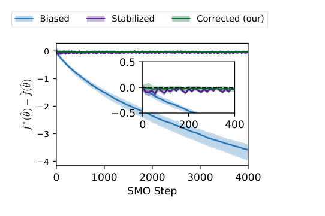
<figcaption class="paper-figure-caption"><b>Fig 1.</b> FIG. 1. Estimation error of energy over SMO iterations by the biased, stabilized and our bias-corrected SMO-VQE algo- rithms.</figcaption>
</figure>
<figure class="paper-figure-card">
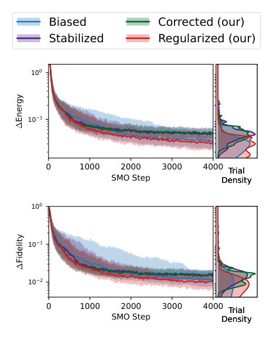
<figcaption class="paper-figure-caption"><b>Fig 2.</b> FIG. 2. Performance comparison of the biased, corrected, and regularized SMO algorithms after 100 sweeps, with Nshots = 900 per evaluation. The spontaneous bias accumulation im- proves convergence relative to the stabilized and corrected algorithm, but is outperformed by the proposed regulariza- tion strategy.</figcaption>
</figure>
<figure class="paper-figure-card">
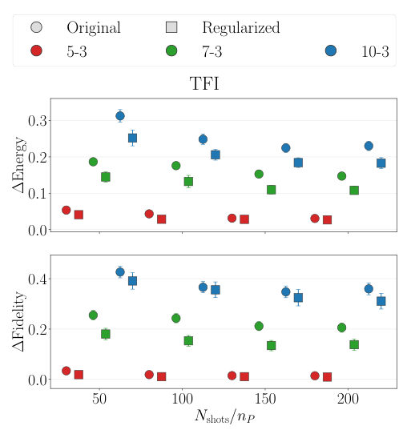
<figcaption class="paper-figure-caption"><b>Fig 3.</b> FIG. 3. Comparison of the final ∆Energy and ∆Fidelity obtained with the original algorithm and our regularized method for Nshots/nP ∈{50, 100, 150, 200}, nq ∈{5, 7, 10} and nl = 3.</figcaption>
</figure>
<figure class="paper-figure-card">
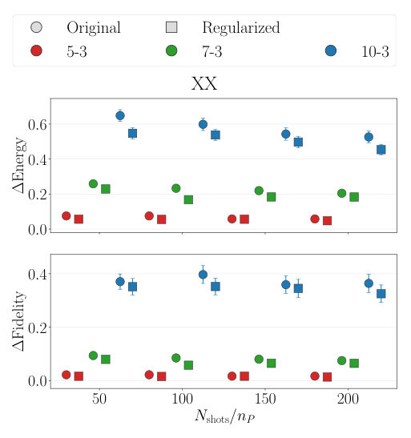
<figcaption class="paper-figure-caption"><b>Fig 4.</b> FIG. 5. Comparison between the original algorithm and our regularization method on the XX model for Nshots/nP ∈ {50, 100, 150, 200}, nq ∈{5, 7, 10} and nl = 3.</figcaption>
</figure>
<figure class="paper-figure-card">
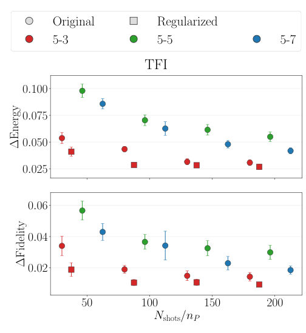
<figcaption class="paper-figure-caption"><b>Fig 5.</b> FIG. 4. Comparison of final ∆Energy and ∆Fidelity obtained with the original algorithm and our regularized method for Nshots/nP ∈{50, 100, 150, 200}, nq = 5, and nl ∈{3, 5, 7}.</figcaption>
</figure>
</div>

<p><strong>Summary.</strong> This paper tackles the systematic bias inherent in the SMO optimization technique used within Variational Quantum Eigensolvers (VQE). By analyzing the source of this bias, the authors propose a novel regularization method. This method successfully corrects the energy estimate while stabilizing the optimization process, leading to consistent performance improvements across various quantum simulation models.</p>
<p><strong>Why it may be interesting.</strong> It provides crucial theoretical insights into the practical limitations of variational quantum algorithms, offering a robust, hardware-agnostic optimization technique that improves convergence reliability.</p>
<details>
<summary>Detailed structure</summary>
<p><strong>Main problem.</strong> The paper analyzes and seeks to correct the systematic bias introduced during the optimization process of Sequential Minimal Optimization Variational Quantum Eigensolvers (SMO-VQE).</p>
<p><strong>Main result.</strong> A proposed regularization method successfully maintains unbiased energy estimation while improving overall optimization performance compared to the original biased or purely corrected estimators.</p>
<p><strong>Method.</strong> The authors derive the analytical form of the bias accumulation in SMO-VQE by analyzing the energy expectation value's trigonometric dependence on circuit parameters. They then propose a controlled regularization term to mitigate this bias.</p>
<p><strong>Model / system.</strong> The work is applied to Variational Quantum Eigensolvers (VQE) used to find the ground state of a general Hamiltonian. Specific examples include the Transverse Field Ising Model and general spin Hamiltonians using the EfficientSU(2) ansatz.</p>
<p><strong>Key observables.</strong> Estimated energy expectation value ($\langle H 
angle$), Energy Estimation Error ($\Delta 	ext{Energy}$), and Fidelity ($\Delta 	ext{Fidelity}$).</p>
<p><strong>Important parameters / regimes.</strong> Circuit parameters ($   heta$), number of shots ($N_{  ext{shots}}$), circuit depth, and the regularization strength ($r$).</p>
<p><strong>Assumptions / limitations.</strong> The analysis primarily focuses on mitigating statistical bias arising from finite measurement shots (shot variance), neglecting hardware noise. It relies on first-order expansions in the minimizer displacement.</p>
<p><strong>Figures summary.</strong> Figures compare the energy estimation error and fidelity across different SMO variants (biased, corrected, regularized) for various Hamiltonians (TFIM, XX, XXZ, XXX) under varying noise conditions.</p>
<p><strong>Paper structure.</strong> The paper systematically analyzes the bias origin in SMO-VQE, derives the bias term analytically, shows that simple correction destabilizes optimization, and finally proposes a controlled regularization scheme that balances bias removal with optimization stability.</p>
</details>
<details>
<summary>Abstract</summary>
<p>The Nakanishi Fujii Todo (NFT) algorithm, also known as Rotosolve, implements Sequential Minimal Optimization for Variational Quantum Eigensolvers (SMO-VQE) by exploiting the trigonometric dependence of the energy on individual circuit parameters. This enables analytical one-dimensional minimization using only a few , typically two, energy evaluations, but introduces bias in the estimated energy. Although performing additional measurements every few tens of iterations can mitigate bias accumulation, we find that such corrections often degrade optimization performance. In this paper, we analyze the origin and accumulation of bias during the SMO-VQE process. Specifically, we show that the bias can be accurately estimated without additional measurements. Furthermore, we find that bias correction destabilizes optimization along directions with small curvature, whereas the original biased estimator implicitly acts as a regularizer. Based on these insights, we propose a simple regularization method that implements error accumulation while maintaining unbiased energy estimation. The resulting algorithm consistently improves performance across different system sizes, circuit depths, target Hamiltonians, and measurement shots, with minimal hyperparameter tuning.</p>
</details>
<p><sub><a href="#top">↑ back to top</a></sub></p>

<p><a id="paper-2605.16060"></a></p>
<h3 id="mutually-unbiased-bases-for-variational-quantum-initialization-basis-union-optimality-and-adaptive-family-search"><a href="http://arxiv.org/abs/2605.16060v1">Mutually Unbiased Bases for Variational Quantum Initialization: Basis-Union Optimality and Adaptive Family Search</a></h3>
<p><strong>Authors:</strong> Abed Semre, Steven Frankel<br>
<strong>Type:</strong> both · <strong>Category:</strong> quantum information and computing · <strong>PDF:</strong> <a href="https://arxiv.org/pdf/2605.16060v1">https://arxiv.org/pdf/2605.16060v1</a><br>
<strong>Analysis basis:</strong> full PDF text, analyzed in chunks
<strong>Topic relevance:</strong> <code>entanglement &amp; information structure</code> <strong>1/5</strong></p>
<div class="figure-strip-hint">↔ Scroll figures horizontally</div>
<div class="paper-figures-scroll">
<figure class="paper-figure-card">
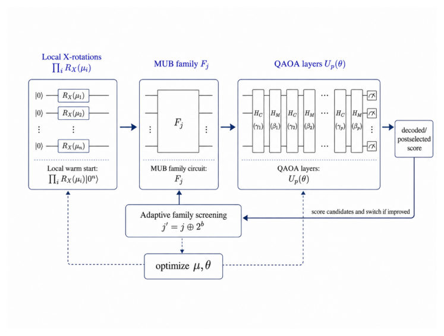
<figcaption class="paper-figure-caption"><b>Fig 1.</b> Figure 1. Adaptive MUB-XRot warm-start mechanism. The method applies local 𝑋-rotations, a selected MUB-family circuit 𝐹𝑗, and ordinary QAOA layers 𝑈𝑝(𝜃). During optimization, neighboring families 𝑗′ = 𝑗⊕2𝑏are screened, and a family switch is accepted only when the screening objective improves. This is a warm-start/pre-circuit method, not a fully matched-mixer MUB-QAOA construction.</figcaption>
</figure>
<figure class="paper-figure-card">

<figcaption class="paper-figure-caption"><b>Fig 2.</b> Figure 2. Decoded solution ratio for standard QAOA and adaptive MUB-XRot QAOA across the five benchmark families. Facets separate problem family, size, and depth. The figure shows both the broad MIS improvements and the MaxCut ceiling effect.</figcaption>
</figure>
<figure class="paper-figure-card">

<figcaption class="paper-figure-caption"><b>Fig 3.</b> Figure 3. Solved rate by problem family in the cross-problem benchmark. Bars show the fraction of paired instance-depth cases for which the decoded solution reaches the classical optimum. Adaptive MUB-XRot QAOA improves the solved rate most strongly for MIS and weighted MIS, while MaxCut shows only a small increase because standard QAOA is already near the ceiling.</figcaption>
</figure>
<figure class="paper-figure-card">

<figcaption class="paper-figure-caption"><b>Fig 4.</b> Figure 4. Scalable MUB-family search in QRAO MaxCut. The plot compares 𝑋-variational QRAO, fixed MUB 𝑟= 1 with 𝑏0-prescreening, and bit-flip multi-start 2POLE. The metric is the relaxed approximation ratio 𝛼𝑟, averaged over seeds by graph size and depth.</figcaption>
</figure>
</div>

<p><strong>Summary.</strong> This paper theoretically proves that Mutually Unbiased Bases (MUBs) provide the optimal structure for initializing variational quantum algorithms by maximizing coverage of the random-Hamiltonian landscape. Empirically, it demonstrates that using MUBs as a warm-start heuristic (Adaptive MUB-XRot QAOA) significantly improves solution quality over standard QAOA on several benchmark problems, although this comes with high computational overhead.</p>
<p><strong>Why it may be interesting.</strong> The theoretical connection between MUBs and Gaussian width provides a deep mathematical understanding of state preparation in quantum algorithms, which is highly relevant for designing robust quantum initialization protocols.</p>
<details>
<summary>Detailed structure</summary>
<p><strong>Main problem.</strong> The paper investigates the optimal structure for a finite set of initial states (basis-union ensemble) used in Variational Quantum Algorithms (VQAs) to maximize coverage of the random-Hamiltonian landscape.</p>
<p><strong>Main result.</strong> The complete set of Mutually Unbiased Bases (MUBs) is theoretically proven to maximize the isotropic random-Hamiltonian Gaussian width among all unions of $d+1$ orthonormal bases.</p>
<p><strong>Method.</strong> The authors combine advanced mathematical tools, such as the centered-convex Gaussian correlation inequality, with extensive empirical benchmarking across several combinatorial optimization problems.</p>
<p><strong>Model / system.</strong> The study focuses on Variational Quantum Algorithms (VQAs) applied to quantum optimization problems (e.g., MaxCut, MIS). The theoretical analysis uses the random Hamiltonian $H$ acting on a $d$-dimensional Hilbert space, while the empirical tests use specific problem Hamiltonians.</p>
<p><strong>Key observables.</strong> Isotropic random-Hamiltonian Gaussian width ($W(\mathcal{S})$), Decoded Solution Ratio ($
ho$), and the solved rate in QAOA benchmarks.</p>
<p><strong>Important parameters / regimes.</strong> The dimension $d$ of the Hilbert space, the number of bases used ($d+1$), and the depth/size parameters ($p, n$) of the tested optimization problems.</p>
<p><strong>Assumptions / limitations.</strong> The theoretical optimality is restricted to unions of $d+1$ orthonormal bases, and the empirical results are explicitly noted to incur substantial runtime overhead and do not claim quantum advantage.</p>
<p><strong>Figures summary.</strong> Figures summarize the performance of adaptive MUB-XRot QAOA versus standard QAOA across various problem families, showing improvements in decoded solution ratio and solved rate. Other figures compare QRAO approximation ratios for different MUB search strategies.</p>
<p><strong>Paper structure.</strong> The paper first establishes the theoretical optimality of MUBs using Gaussian correlation inequalities. It then analyzes the algorithmic implications, showing how MUB dependence collapses for diagonal costs. Finally, it presents extensive empirical benchmarks comparing adaptive MUB-XRot QAOA and QRAO against standard methods.</p>
</details>
<details>
<summary>Abstract</summary>
<p>We study mutually unbiased bases (MUBs) as structured finite initialization and adaptation families for variational quantum algorithms. The main theoretical result is that, in every dimension admitting a complete set of MUBs, the complete MUB ensemble maximizes isotropic Gaussian random-Hamiltonian width among all unions of d+1 orthonormal bases in C^d. Equivalently, within this basis-union class, it gives the smallest expected best-of-set minimum for random-Hamiltonian minimization. The proof represents each orthonormal basis as a regular-simplex Gaussian block and uses a centered-convex Gaussian correlation inequality to show that the independent-block case, realized by complete MUBs, is stochastically extremal. We also record a radial extension for Hamiltonians H=RG with R nonnegative and independent, and the unrestricted qubit case, where complete qubit MUBs are globally optimal among arbitrary six-state ensembles by a Bloch-sphere/octahedron mean-width argument.   We then separate this coverage theorem from variational training dynamics. For diagonal QUBO costs, the MUB-family dependence of a fully matched construction collapses; for the canonical b=0 label it reduces to ordinary X-mixer QAOA. The empirical method is therefore adaptive MUB-XRot warm-start QAOA rather than canonical matched-mixer MUB-QAOA. In a cross-problem benchmark over MaxCut, weighted MaxCut, MIS, weighted MIS, and knapsack, adaptive MUB-XRot is non-worse than standard QAOA in 80.0% of 1500 paired cases, with win/tie/loss 829/371/300 and mean decoded-ratio improvement +0.1616. A separate QRAO MaxCut study shows that bit-flip MUB-family search reaches mean relaxed ratio 0.921 and improves over the X-variational baseline by +0.0608. The evidence is quality-oriented and incurs substantial runtime overhead; no quantum-advantage claim is made.</p>
</details>
<p><sub><a href="#top">↑ back to top</a></sub></p>

<p><a id="paper-2605.15441"></a></p>
<h3 id="strong-universality-class-in-disordered-systems"><a href="http://arxiv.org/abs/2605.15441v1">Strong universality class in disordered systems</a></h3>
<p><strong>Authors:</strong> Henrique A Lima, Kaue Hermann, Ismael S. S. Carrasco, Jairo R. L. de Almeida, Fernando A. Oliveira<br>
<strong>Type:</strong> both · <strong>Category:</strong> statistical mechanics · <strong>PDF:</strong> <a href="https://arxiv.org/pdf/2605.15441v1">https://arxiv.org/pdf/2605.15441v1</a><br>
<strong>Analysis basis:</strong> full PDF text, analyzed in chunks
<strong>Topic relevance:</strong> <code>analog quantum simulation</code> <strong>1/5</strong></p>
<div class="figure-strip-hint">↔ Scroll figures horizontally</div>
<div class="paper-figures-scroll">
<figure class="paper-figure-card">

<figcaption class="paper-figure-caption"><b>Fig 1.</b> FIG. 1. Order parameter m as a function of temperature T for different values of standard deviation σ. From here on, T represents the temperature in units of TO.</figcaption>
</figure>
<figure class="paper-figure-card">

<figcaption class="paper-figure-caption"><b>Fig 2.</b> FIG. 2. Correlation length ρ as a function of temperature T for different values of standard deviation σ.</figcaption>
</figure>
<figure class="paper-figure-card">

<figcaption class="paper-figure-caption"><b>Fig 3.</b> FIG. 3. Fractal dimension dR as a function of temperature T for different values of standard deviation σ. Dashed gray line describes dR = 1.75. Fractal dimensions dR were calculated by parallel box counting method via CUDA technology.</figcaption>
</figure>
<figure class="paper-figure-card">

<figcaption class="paper-figure-caption"><b>Fig 4.</b> FIG. 5. Evolution of the critical exponents β and ν as func- tion of disorder. a) ν and 8β as a function of standard de- viation σ. Values of β, as well as the associated errors, are multiplied by 8 to describe both exponents within a common scale. Simulations were made using L = 4096. b) Critical exponent β as a function of ν. Green straight line exhibits a linear relation β = a · ν between these parameters that still exists for disordered systems with a = 0.12517(36).</figcaption>
</figure>
<figure class="paper-figure-card">

<figcaption class="paper-figure-caption"><b>Fig 5.</b> FIG. 4. Sequential steps for the determination of the critical temperature and critical exponent β for the σ = 0 system. (a) Order parameter curve m(T) exemplifying the selection of fitting windows, where Tmin is fixed and Tmax is varied to analyze the sensitivity of the fit due the choice of the window. (b) Estimated critical temperature Tc(Tmax) as a function of the upper fitting bound. The highlighted region identifies the stability range from which the critical temperature Tc is selected. (c) Log–log plot of the order parameter m(t), with t ≡(T0 −T)/T0 , near criticality, with the power-law fit used to determine β. The extracted exponent for the data in the inset is β = 0.1251(9).</figcaption>
</figure>
</div>

<p><strong>Summary.</strong> This paper studies phase transitions in disordered magnetic systems using the Edwards-Anderson Hamiltonian. By combining Monte Carlo simulations with advanced fractal analysis, the authors demonstrate that while standard critical exponents depend on disorder strength, certain geometric exponents remain invariant. This invariance defines a 'strong universality class' crucial for understanding complex disordered materials.</p>
<p><strong>Why it may be interesting.</strong> The concept of strong universality, where geometric properties are robust against disorder while thermodynamic exponents change, provides a powerful framework for understanding critical phenomena in complex, disordered quantum materials.</p>
<details>
<summary>Detailed structure</summary>
<p><strong>Main problem.</strong> The paper investigates how disorder affects the critical exponents and fractal dimensions of phase transitions in disordered magnetic systems, aiming to identify exponents invariant with disorder.</p>
<p><strong>Main result.</strong> While critical exponents like $eta$ and $
u$ vary with the disorder strength ($\sigma$), a subgroup of geometric quantities ($\eta, d_f, d_R$) remains invariant, suggesting a 'strong universality class'.</p>
<p><strong>Method.</strong> The study combines analytical derivations using fractional differential geometry with extensive Monte Carlo simulations to validate scaling laws and critical behavior.</p>
<p><strong>Model / system.</strong> The system analyzed is a disordered magnetic system modeled using the Edwards-Anderson Hamiltonian on a lattice. The disorder is controlled by the standard deviation $\sigma$ of the couplings.</p>
<p><strong>Key observables.</strong> Magnetization $m(T)$, correlation length $
ho(T)$, critical exponents ($eta, 
u, \eta$), and fractal dimensions ($d_f, d_R$).</p>
<p><strong>Important parameters / regimes.</strong> Disorder standard deviation $\sigma$, temperature $T$, and lattice dimension $d$.</p>
<p><strong>Assumptions / limitations.</strong> The analysis relies on extending concepts from Euclidean space to fractal media using fractional derivatives, and the determination of exponents depends on the fitting window chosen.</p>
<p><strong>Figures summary.</strong> Figures illustrate the temperature dependence of the order parameter, correlation length, and Riesz fractal dimension for various disorder strengths, showing clear scaling behavior near $T_c$.</p>
<p><strong>Paper structure.</strong> The work systematically analyzes the EA Hamiltonian, reviews scaling theories (Fisher's $\eta$), applies fractal analysis to modify correlation functions, and uses MC simulations to demonstrate the existence of disorder-invariant geometric universality.</p>
</details>
<details>
<summary>Abstract</summary>
<p>Disordered systems are very rich laboratories for exploring complex systems. In particular, disordered magnetic systems have been extremely important in the last five decades for understanding a wide range of phenomena. In this work, we use the Edwards-Anderson Hamiltonian to obtain the thermodynamic properties of disordered magnetic systems. In this way, we conduct a systematic investigation of magnetization, correlation functions, order parameter, and fractal dimensions, in function of disorder. In this context, the autocorrelation function for order--parameter fluctuations, introduced by Fisher ( Journal of Mathematical Physics 5, 944322 (1964)), provides an important mathematical framework for understanding the second-order phase transition at equilibrium. However, his analysis is restricted to a Euclidean space of dimension $d$, and an exponent $η$ is introduced to correct the spatial behavior of the correlation function at $T=T_c$. In recent work, Lima et al ( Phys. Rev. E 110, L062107 (2024)) demonstrated that at $T_c$ a fractal analysis is necessary for a complete description of the correlation function. We use Monte Carlo simulations to validate analytical results and to show how disorder alters critical exponents , giving rise to different universality classes. On the other hand, there is a subgroup of critical exponents and fractal dimensions that are invariant with disorder. This subgroup heralds a strong universality class.</p>
</details>
<p><sub><a href="#top">↑ back to top</a></sub></p>

<p><a id="paper-2605.16249"></a></p>
<h3 id="the-collapse-of-unentangled-stoquastic-merlin-arthur-proof-systems"><a href="http://arxiv.org/abs/2605.16249v1">The Collapse of Unentangled Stoquastic Merlin-Arthur Proof Systems</a></h3>
<p><strong>Authors:</strong> William Gay, Fernando Granha Jeronimo<br>
<strong>Type:</strong> theory · <strong>Category:</strong> quantum information and computing · <strong>PDF:</strong> <a href="https://arxiv.org/pdf/2605.16249v1">https://arxiv.org/pdf/2605.16249v1</a><br>
<strong>Analysis basis:</strong> full PDF text, analyzed in chunks
<strong>Topic relevance:</strong> <code>entanglement &amp; information structure</code> <strong>1/5</strong></p>
<div class="figure-strip-hint">↔ Scroll figures horizontally</div>
<div class="paper-figures-scroll">
<figure class="paper-figure-card">

<figcaption class="paper-figure-caption"><b>Fig 1.</b> Figure 1: Complexity landscape around the result. The highlighted equality is proved here for inverse- polynomial promise gaps by the direct k-prover collapse in Theorem 5.1. The dashed arrow is the direct BKS sum-of-squares simulation for nonnegative forms [22], which gives an EXP upper bound in the exponentially large witness dimension and is superseded, for stoquastic verifiers, by the collapse. The containment StoqMA ⊆AM follows from the stoquastic largest-eigenvalue/approximate-set-size framework of Bravyi–DiVincenzo–Oliveira–Terhal together with the original stoquastic-verification framework [13, 14]; StoqMA ⊆PP follows from StoqMA ⊆QMA ⊆PP [35].</figcaption>
</figure>
</div>

<p><strong>Summary.</strong> This paper analyzes the computational power of multi-prover quantum verification protocols under the stoquastic constraint. It proves that the ability to use multiple provers ($k$) does not enhance the verification power beyond that of a single prover ($ ext{StoqMA}$). The key tool is a specialized de Finetti theorem, leading to the collapse $  ext{StoqMA}(k) =    ext{StoqMA}$ for specific gap conditions.</p>
<p><strong>Why it may be interesting.</strong> This work provides a deep structural result in quantum complexity theory, showing that for certain restricted quantum protocols (stoquastic), the ability to use multiple entangled provers offers no computational advantage over a single prover.</p>
<details>
<summary>Detailed structure</summary>
<p><strong>Main problem.</strong> The paper investigates the role of interference in quantum computation complexity by proving that unentanglement does not increase the power of stoquastic Merlin-Arthur verification.</p>
<p><strong>Main result.</strong> It establishes the collapse $  ext{StoqMA}(k) =    ext{StoqMA}$ for polynomially bounded $k$ and inverse-polynomial promise gaps, implying $   ext{StoqMA}(k) \subseteq    ext{AM} \cap    ext{PP} \subseteq   ext{PSPACE}$.</p>
<p><strong>Method.</strong> The core method involves applying a positive, value-based de Finetti theorem for separately symmetric extensions to relate the product state value to the largest eigenvalue of a projected operator.</p>
<p><strong>Model / system.</strong> The model is quantum computational complexity, specifically comparing $k$-prover stoquastic Merlin-Arthur verification ($   ext{StoqMA}(k)$) against one-witness verification ($   ext{StoqMA}$). The constraints involve stoquasticity (nonnegative, positive semidefinite contraction).</p>
<p><strong>Key observables.</strong> Acceptance probability, Hellinger distance, Relative Entropy, and the non-negative product value $\omega^+(M)$.</p>
<p><strong>Important parameters / regimes.</strong> The number of provers $k$, the promise gap $\Delta(n)$ (required to be $\ge 1/	ext{poly}(n)$), and the approximation error $\epsilon$.</p>
<p><strong>Assumptions / limitations.</strong> The result is contingent on the test matrix $M$ being entrywise nonnegative and the promise gap being inverse-polynomial. The de Finetti theorem used is a one-sided, test-dependent value theorem.</p>
<p><strong>Figures summary.</strong> Figure 1 illustrates the complexity landscape, confirming the equality $   ext{StoqMA} =   ext{StoqMA}(2) =    ext{StoqQMA}(2) =   ext{StoqMA}(k)$ under the specified gap conditions.</p>
<p><strong>Paper structure.</strong> The paper builds from establishing the positive de Finetti theorem for separately symmetric extensions (Chunk 3), to realizing this spectral relaxation as an actual one-witness verifier (Chunk 2), and finally applying this construction to prove the collapse $    ext{StoqMA}(k) =    ext{StoqMA}$ (Chunk 4).</p>
</details>
<details>
<summary>Abstract</summary>
<p>Entanglement and interference are among the most fundamental properties of quantum mechanics. In this work, we investigate the role and power of interference in the context of detecting entanglement. We do so from a computational complexity lens by proving that unentanglement gives no additional power to stoquastic Merlin-Arthur verification. For every polynomial number of provers $k=k(n)$, \[   \text{StoqMa}(k)=\text{StoqMa} . \] Conceptually, the proof separates the role of entanglement from the role of interference: once destructive interference is ruled out by stoquasticity, the product-state constraint can be absorbed into a polynomially larger one-witness stoquastic verification.   The main analytic ingredient is a positive, value-based de Finetti theorem for separately symmetric extensions. If $M$ is an entrywise nonnegative positive semidefinite contraction on $A_1\otimes\cdots\otimes A_k$, then the nonnegative product value of $M$ is approximated to additive error $ε$ by the largest eigenvalue of \[   Π_R^{<k}   (M_{A_{1,1}\cdots A_{k-1,1}A_k}\otimes I)   Π_R^{<k},   \qquad   R=O\!\left(\frac{k^2\sum_i\log\dim A_i}{ε^3}\right), \] where $Π_R^{<k}$ is the operator on $A_1^{\otimes R} \otimes \cdots \otimes A_{k-1}^{\otimes R} \otimes A_k$ projecting to the subspace $\mathrm{Sym}^R(A_1) \otimes \cdots \otimes \mathrm{Sym}^{R}(A_{k-1}) \otimes A_k$.   The spectral relaxation is then realized as an actual one-witness stoquastic verifier. After replacing the uniform permutation averages in the symmetric projectors by inverse-polynomially close dyadic inverse-invariant averages. Consequently, \[   \text{StoqMa}(k)=\text{StoqMa}\subseteq\text{AM}\cap\text{PP}\subseteq\text{PSPACE} . \] The positive de Finetti theorem is isolated as a standalone technique and may be useful in other nonnegative tensor-optimization and stoquastic-verification settings.</p>
</details>
<p><sub><a href="#top">↑ back to top</a></sub></p>
<h2 id="other-papers-17">Other papers (17)</h2>
<p><em>Papers from primary archives without highlighted authors or any topic match. Click to expand.</em></p>
<details>
<summary>Show other papers</summary>

<p><a id="paper-2605.15667"></a></p>
<h3 id="a-finite-state-gibbs-construction-from-a-recognition-cost"><a href="http://arxiv.org/abs/2605.15667v1">A Finite-State Gibbs Construction from a Recognition Cost</a></h3>
<p><strong>Authors:</strong> Megan Simons, Jonathan Washburn<br>
<strong>Type:</strong> theory · <strong>Category:</strong> statistical mechanics · <strong>PDF:</strong> <a href="https://arxiv.org/pdf/2605.15667v1">https://arxiv.org/pdf/2605.15667v1</a><br>
<strong>Analysis basis:</strong> full PDF text, analyzed in chunks</p>
<div class="figure-strip-hint">↔ Scroll figures horizontally</div>
<div class="paper-figures-scroll">
<figure class="paper-figure-card">

<figcaption class="paper-figure-caption"><b>Fig 1.</b> Figure 1. Quadratic lower bound on J. The RCL cost J(x) = 1</figcaption>
</figure>
<figure class="paper-figure-card">

<figcaption class="paper-figure-caption"><b>Fig 2.</b> Figure 2. Gibbs weights pk as a function of the target mean cost ⟨X⟩for the three- state example with costs X = (0, 0.5, 1), plotted over the positive-temperature range Emc ∈(0, 1</figcaption>
</figure>
</div>
<p><strong>Summary.</strong> This paper constructs a finite-state Gibbs ensemble theory by deriving the necessary cost function from a specific composition law governing observable ratios. It shows that this approach successfully reproduces the canonical ensemble structure, providing a unified mathematical bridge between ratio data, information geometry, and statistical mechanics.</p>
<p><strong>Why it may be interesting.</strong> It provides a powerful, mathematically rigorous alternative to standard maximum-entropy methods by grounding the statistical mechanics in the algebraic structure of observed ratios, which is highly relevant for analyzing non-equilibrium or constrained physical systems.</p>
<details>
<summary>Detailed structure</summary>
<p><strong>Main problem.</strong> The paper develops an alternative framework for deriving the finite-state Gibbs distribution by starting from a ratio-cost construction, bypassing the traditional reliance on explicit Hamiltonian definitions.</p>
<p><strong>Main result.</strong> It establishes that the Recognition Composition Law (RCL), when calibrated by unit log-curvature, yields the cost function $J(x) = rac{1}{2}(x+x^{-1}) - 1$, which successfully connects ratio data to the canonical ensemble via entropy maximization.</p>
<p><strong>Method.</strong> The methodology involves analyzing a multiplicative-reciprocal functional equation (the composition law) in log-coordinates, solving it using d'Alembert's equation, and then applying multinomial counting and convex duality to recover the Gibbs weights.</p>
<p><strong>Model / system.</strong> The model is a finite-state system where the input data consists of dimensionless ratios $\{r_\omega\}$ (e.g., equilibrium constants or transition rate ratios). The framework is general but restricted to these finite, strictly positive outcome spaces.</p>
<p><strong>Key observables.</strong> Gibbs weights ($p_\omega$), Recognition Free Energy ($F_R$), and the $J$-cost divergence ($D_J(q\|p)$).</p>
<p><strong>Important parameters / regimes.</strong> The mean-cost constraint $\langle X 
angle_{	ext{target}}$ and the resulting inverse temperature $eta$ (or $T_R = 1/eta$).</p>
<p><strong>Assumptions / limitations.</strong> The framework is conditional on axioms (A1)–(A3), the adoption of the RCL, and the restriction to finite outcome spaces with strictly positive weights.</p>
<p><strong>Figures summary.</strong> Figures compare the derived RCL cost $J(x)$ against its quadratic surrogate $(\log x)^2/2$, showing the divergence for large ratios. Other figures illustrate the convergence of Gibbs weights to the uniform measure as the mean cost constraint approaches a specific limit.</p>
<p><strong>Paper structure.</strong> The paper moves from establishing the mathematical structure (the composition law and the resulting cost $J(x)$) to unifying the derivation chain $\{r_\omega\} 	o J 	o X 	o (	ext{Gibbs, FR, DKL})$, and finally applying this framework to test cases, including irrational cost structures.</p>
</details>
<details>
<summary>Abstract</summary>
<p>On a finite outcome space, the canonical Gibbs distribution is usually obtained by maximizing Shannon entropy at fixed mean of an externally supplied energy functional. This paper studies the finite-state consequences of a ratio-cost construction instead: after adopting the normalized d'Alembert degree-two closure called the Recognition Composition Law (RCL), with unit log-curvature calibration at the reference ratio, the continuous nontrivial positive branch is $J(x)=\tfrac12(x+x^{-1})-1=\cosh(\log x)-1$. Given the induced cost vector $X_ω=J(r_ω)$, multinomial counting and convex duality recover the finite-state Gibbs weights and the identity $F_{\mathrm{R}}(q)-F_{\mathrm{R}}(p)=T_{\mathrm{R}}\,D_{\mathrm{KL}}(q\Vert p)$; the entropy-maximization steps are classical once the cost is fixed. New technical content includes a non-asymptotic Stirling bound and soft-shell constrained-type theorems for real-valued costs. A three-state example compares the Gibbs law to squared-log, affinity-as-energy, and Tsallis alternatives at the same cost vector and mean-cost constraint, with sample-size power calculations at fixed RCL ground truth. The framework is conditional on axioms (A1)--(A3) and restricted to finite outcome spaces with strictly positive weights; it does not derive the composition law from a more primitive principle.</p>
</details>
<p><sub><a href="#top">↑ back to top</a></sub></p>

<p><a id="paper-2605.16119"></a></p>
<h3 id="boundary-anomalous-dimensions-from-bcft-math708math-theories-with-a-boundary-and-higher-derivative-generalizations"><a href="http://arxiv.org/abs/2605.16119v1">Boundary anomalous dimensions from BCFT: $φ^{3}$ theories with a boundary and higher-derivative generalizations</a></h3>
<p><strong>Authors:</strong> Yongwei Guo, Wenliang Li<br>
<strong>Type:</strong> theory · <strong>Category:</strong> statistical mechanics · <strong>PDF:</strong> <a href="https://arxiv.org/pdf/2605.16119v1">https://arxiv.org/pdf/2605.16119v1</a><br>
<strong>Analysis basis:</strong> full PDF text, analyzed in chunks</p>
<div class="figure-strip-hint">↔ Scroll figures horizontally</div>
<div class="paper-figures-scroll">
<figure class="paper-figure-card">

<figcaption class="paper-figure-caption"><b>Fig 1.</b> Low-resolution page preview, page 2</figcaption>
</figure>
<figure class="paper-figure-card">

<figcaption class="paper-figure-caption"><b>Fig 2.</b> Low-resolution page preview, page 3</figcaption>
</figure>
<figure class="paper-figure-card">

<figcaption class="paper-figure-caption"><b>Fig 3.</b> Low-resolution page preview, page 4</figcaption>
</figure>
<figure class="paper-figure-card">

<figcaption class="paper-figure-caption"><b>Fig 4.</b> Low-resolution page preview, page 5</figcaption>
</figure>
<figure class="paper-figure-card">

<figcaption class="paper-figure-caption"><b>Fig 5.</b> Low-resolution page preview, page 6</figcaption>
</figure>
</div>
<p><strong>Summary.</strong> This theoretical paper calculates the boundary anomalous dimensions and correlation function coefficients for $\phi^3$ theories in the presence of a boundary, extending the analysis to higher-derivative generalizations. It employs advanced CFT techniques, notably combining conformal multiplet recombination with boundary crossing symmetry, to determine critical exponents for models relevant to statistical physics, such as the Potts model.</p>
<p><strong>Why it may be interesting.</strong> The rigorous application of CFT techniques like boundary crossing symmetry to determine critical exponents in interacting quantum field theories provides deep insights into universality classes relevant to critical phenomena in condensed matter systems.</p>
<details>
<summary>Detailed structure</summary>
<p><strong>Main problem.</strong> The paper determines the boundary anomalous dimensions and operator expansion coefficients for $\phi^3$ theories with a boundary, and generalizes these results to higher-derivative theories.</p>
<p><strong>Main result.</strong> Specific formulas are derived for the anomalous dimensions ($\hat{\gamma}_\Phi$) and one-point function coefficients for both the single-field (Yang-Lee) and multi-field (Potts) cases, including generalizations to higher-derivative interactions.</p>
<p><strong>Method.</strong> The analysis combines the conformal multiplet recombination method with the boundary crossing symmetry applied to the bulk two-point correlator, often utilizing an $\epsilon$-expansion.</p>
<p><strong>Model / system.</strong> The primary models are $\phi^3$ deformations of free boundary conformal field theories (BCFT). Specific physical realizations include the Yang-Lee model (related to branched polymers) and the $(N+1)$-state Potts model (related to percolation).</p>
<p><strong>Key observables.</strong> Boundary anomalous dimensions ($\hat{\gamma}_\Phi$), boundary operator expansion coefficients ($\mu_\Phi$), and bulk one-point function coefficients ($a_O$).</p>
<p><strong>Important parameters / regimes.</strong> The analysis is performed in the $\epsilon$ expansion, and results depend on the coupling constants and boundary condition parameters ($\sigma_0, \sigma_1$).</p>
<p><strong>Assumptions / limitations.</strong> The calculations rely on the $\epsilon 	o 0$ limit and the assumption that certain contributions (like the bulk identity contribution) do not receive corrections at low orders in the expansion parameter $\xi$.</p>
<p><strong>Figures summary.</strong> The notes reference tables summarizing main results for various $\phi^3$ CFTs and provide complex mathematical equations detailing the derived parameters and correlation functions.</p>
<p><strong>Paper structure.</strong> The paper systematically analyzes the problem by first establishing the general framework using multiplet recombination and boundary crossing symmetry. It then applies this framework to specific models, such as the Yang-Lee and Potts models, before generalizing the results to higher-derivative theories ($\phi \Box^k \phi$) and $\phi^{2n+1}$ theories.</p>
</details>
<details>
<summary>Abstract</summary>
<p>We consider the bulk $φ^3$ deformation of the free boundary conformal field theory in the $ε$ expansion. We determine the leading corrections to the scaling dimensions of boundary fundamental operators and some boundary operator expansion coefficients. Our procedure combines the conformal multiplet recombination with the boundary crossing symmetry. The results cover both the single field case and the multi-field case with $S_{N+1}$ global symmetry, which are associated with the Yang-Lee model and the $(N+1)$-state Potts model respectively. These semi-infinite models describe branched polymers, percolation, and spanning forest at a surface. We generalize these results to some higher derivative theories. In addition, we study the $φ^{2n+1}$ theories with $n>1$, but only obtain some boundary operator expansion coefficients.</p>
</details>
<p><sub><a href="#top">↑ back to top</a></sub></p>

<p><a id="paper-2605.16012"></a></p>
<h3 id="charge-sensitive-vibrational-modes-in-bedt-ttf-salts-signatures-of-charge-ordering-and-site-charge"><a href="http://arxiv.org/abs/2605.16012v1">Charge-sensitive vibrational modes in BEDT-TTF salts: Signatures of charge ordering and site charge</a></h3>
<p><strong>Authors:</strong> Savita Priya, Martin Dressel, Jesse Liebman, Natalia Drichko<br>
<strong>Type:</strong> both · <strong>Category:</strong> strongly correlated electrons · <strong>PDF:</strong> <a href="https://arxiv.org/pdf/2605.16012v1">https://arxiv.org/pdf/2605.16012v1</a><br>
<strong>Analysis basis:</strong> full PDF text, analyzed in chunks</p>
<div class="figure-strip-hint">↔ Scroll figures horizontally</div>
<div class="paper-figures-scroll">
<figure class="paper-figure-card">

<figcaption class="paper-figure-caption"><b>Fig 1.</b> FIG. 1. (a) C=C stretching modes for BEDT-TTF molecules: ν2(ag), ν3(ag) and ν27(b1u) (in the notation followed for the to D2h molecular symmetry). (b) Dependence of the C=C stretching modes of the BEDT-TTF molecule on the ionicity. The symbols represent the frequencies calculated by Girlando [22] while the lines correspond to the regression of the experimental data collected by Yamamoto et al. [19]. (c) Different stacking patterns found in BEDT-TTF salts: α and θ have herringbone arrangement, β phase has stacked arrangement, κ and λ phases are formed by dimers, arranged in triangular or stacked patterns, respectively.</figcaption>
</figure>
<figure class="paper-figure-card">

<figcaption class="paper-figure-caption"><b>Fig 2.</b> FIG. 2. Positions of the ν2(ag) and the ν27(b1u) modes for the BEDT-TTF-based salts for which charge disproportiona- tion was identified by both Raman and infrared spectroscopy (the solid lines indicate linear fits, considering all the exam- ples of charge ordering plotted). The exact compositions and frequencies are given in Table II. The red points in the plots are calculated with δν2 = 120 cm−1</figcaption>
</figure>
<figure class="paper-figure-card">

<figcaption class="paper-figure-caption"><b>Fig 3.</b> Fig. 3 displays the spectral position of the ν2(ag) and the ν27(b1u) modes in other BEDT-TTF-based salts for which charge disproportionation was identified by either Raman or infrared spectroscopy; or have multiple peaks (probably due to a more complex charge-ordered pat- terns or additional interactions in this state). The peak frequencies of the charge-ordered compounds, as plot- ted in Figs. 2, and 3 are listed in Table II. Several θ- phase compounds report strong coupling of the ν2(ag) to ν3(ag) modes in the charge-ordered state [19, 60, 75, 76], which are not plotted to reduce complexity. Applying δν27 = 140 cm−1</figcaption>
</figure>
<figure class="paper-figure-card">

<figcaption class="paper-figure-caption"><b>Fig 4.</b> FIG. 3. Positions of the ν2(ag) and the ν27(b1u) modes in different BEDT-TTF-based salts for which charge dispropor- tionation was identified by either Raman or infrared spec- troscopy; or have asymmetric splitting (the solid lines are the relations obtained from 2). The exact compositions and fre- quencies are given in Table II.</figcaption>
</figure>
<figure class="paper-figure-card">

<figcaption class="paper-figure-caption"><b>Fig 5.</b> FIG. 6. Histogram of the room-temperature frequencies re- ported for the (a) ν27(b1u) mode, and (b) ν2(ag) mode, ob- tained from infrared and Raman scattering experiments on different BEDT-TTF salts with nominally half an electron re- moved per molecule, BEDT-TTF+0.5. If treated as a random deviation from the mean, the fit by a Gaussian distribution results in the center frequency and uncertainty as indicated.</figcaption>
</figure>
</div>
<p><strong>Summary.</strong> This paper analyzes how charge ordering in BEDT-TTF organic conductors manifests in the vibrational spectra, specifically using C=C stretching modes. It establishes quantitative relationships between frequency shifts and charge imbalance, but critically warns that structural disorder limits the technique to measuring charge <em>ordering</em> rather than absolute site charge.</p>
<p><strong>Why it may be interesting.</strong> The work bridges solid-state electronic structure (charge ordering) with measurable spectroscopic fingerprints (vibrational modes), providing an experimental handle on strongly correlated phenomena in molecular solids.</p>
<details>
<summary>Detailed structure</summary>
<p><strong>Main problem.</strong> The study aims to understand the origin of various ground states (Mott, charge ordered, superconducting) in BEDT-TTF organic conductors by determining the precise charge distribution on the molecular sites in the insulating state.</p>
<p><strong>Main result.</strong> While charge-frequency relations provide clear signatures for charge ordering ($\sim 141 	ext{ cm}^{-1}/	ext{e}$ for $
u_{27}(b_{1u})$), the large frequency spread ($\Delta
ho \approx (\pm 0.045)e$) indicates that these relations are limited to estimating charge-ordering rather than determining absolute site charge.</p>
<p><strong>Method.</strong> The research combines experimental vibrational spectroscopy (IR and Raman) to measure C=C stretching modes with theoretical analysis to establish linear relationships between frequency shifts and charge imbalance ($\delta
ho$).</p>
<p><strong>Model / system.</strong> The system under investigation is BEDT-TTF-based organic conductors, particularly those in the nominally $  ext{BEDT-TTF}^{+0.5}$ state, which exhibit complex ground states governed by electron-electron interactions.</p>
<p><strong>Key observables.</strong> C=C stretching vibrational modes ($
u_{27}(b_{1u})$ and $
u_2(a_g)$), frequency shifts ($\delta
u$), and the resulting charge imbalance ($\delta
ho$).</p>
<p><strong>Important parameters / regimes.</strong> The charge imbalance ($\delta
ho$) is the key parameter, with characteristic shifts of $141 	ext{ cm}^{-1}/	ext{e}$ and $98 	ext{ cm}^{-1}/	ext{e}$ observed for the respective modes.</p>
<p><strong>Assumptions / limitations.</strong> The primary limitation is that structural variations cause a large uncertainty in the measured frequency spread, hindering the determination of absolute site charge values.</p>
<p><strong>Figures summary.</strong> Figures illustrate the dependence of $ ext{C=C}$ stretching modes on ionicity and show histograms of measured frequencies for $    ext{BEDT-TTF}^{+0.5}$ salts, highlighting the observed spectral spread.</p>
<p><strong>Paper structure.</strong> The paper surveys the relevant vibrational modes, establishes empirical linear relationships between frequency shifts and charge, analyzes data from various charge-ordered salts, and concludes by defining the scope and limitations of using these spectroscopic techniques.</p>
</details>
<details>
<summary>Abstract</summary>
<p>BEDT-TTF-based organic conductors host a number of ground states, tuned by electron repulsion from Mott and charge ordered insulators to superconductors. Knowing charge distribution on the molecular sites in the insulating state of these materials is a key to understanding the origin of these ground states. We survey and discuss the C=C stretching modes in BEDT-TTF based molecular conductors. These molecular vibrations are extremely crucial in characterization of charge-ordered insulators, and are recently linked to superconductivity in some compounds. Focusing on the known examples of BEDT-TTF$^{+0.5}$ salts, we analyse the reliability of the C=C stretching modes for the determination of charge ordering and absolute site charge. Considering the charge-ordered states, a prominent shift in frequency of 141 cm$^{-1}$ per elementary charge $e$ for $ν_{27}(b_{1u})$ and 98 cm$^{-1}$$e$ for $ν_2$($a_g$) can be clearly realised, however, the distribution resulting from different compounds span over 20 cm$^{-1}$. For nominal BEDT-TTF$^{+0.5}$ compounds, the distribution of the resonance also extends around 20 cm$^{-1}$, yielding an unexpected large uncertainty of $Δρ~\approx~(~\pm~0.045)e$, which is presumably due to the influence of small differences in the structure. This highlights the limitations of charge-frequency relations to detect small deviations in absolute charge values on molecular lattice sites, and emphasises on the use of the relations to estimate charge-ordering, rather than absolute site charge.</p>
</details>
<p><sub><a href="#top">↑ back to top</a></sub></p>

<p><a id="paper-2605.15348"></a></p>
<h3 id="clifford-deformed-zero-rate-ldpc-codes-with-50-biased-noise-thresholds"><a href="http://arxiv.org/abs/2605.15348v1">Clifford-deformed zero-rate LDPC codes with 50% biased noise thresholds</a></h3>
<p><strong>Authors:</strong> Jagannath Das, Sayandip Dhara, Pedro Medina, Arthur Pesah, Arpit Dua<br>
<strong>Type:</strong> theory · <strong>Category:</strong> quantum information and computing · <strong>PDF:</strong> <a href="https://arxiv.org/pdf/2605.15348v1">https://arxiv.org/pdf/2605.15348v1</a><br>
<strong>Analysis basis:</strong> full PDF text, analyzed in chunks</p>
<div class="figure-strip-hint">↔ Scroll figures horizontally</div>
<div class="paper-figures-scroll">
<figure class="paper-figure-card">

<figcaption class="paper-figure-caption"><b>Fig 1.</b> FIG. 1: Stabilizers of the [[288, 8, 12]] tile code and its Clifford-deformed variants. In the undeformed tile code, qubits reside on the edges of the lattice, and dots denote stabilizer generators. Boundary dots correspond to single-type stabilizers: mint-green dots denote Z-type stabilizers and orange dots denote X-type stabilizers. Bulk black dots indicate locations where both X- and Z-type stabilizers are present. The support of each stabilizer on nearby qubits is illustrated pictorially. In the bulk, stabilizer generators have weight six, acting on three vertical and three horizontal qubits, as in (a). At the boundaries, truncated geometry produces stabilizers of reduced weight (2, 3,...</figcaption>
</figure>
<figure class="paper-figure-card">

<figcaption class="paper-figure-caption"><b>Fig 2.</b> FIG. 2: Phase diagram of periodic tile codes is shown under random Clifford deformation at infinite bias (η → ∞). The axes (ΠXZ, ΠY Z) specify the probabilities of ap- plying local Clifford permutations that swap X ↔Z and Y ↔Z, respectively. Colors indicate regions with differ- ent estimated thresholds. The rhombic region bounded by the phase points (0.5, 0), (0.5, 0.5), (0, 1), and (0, 0.5) exhibits a 50% threshold. Along the white boundary, we do not observe a sharp crossing in the threshold plot for most of the phase points. Moving away from this regime, the threshold decreases monotonically. Iso-threshold con- tours appear on the two sides of the rhombic regime, forming vertical lines...</figcaption>
</figure>
<figure class="paper-figure-card">

<figcaption class="paper-figure-caption"><b>Fig 3.</b> FIG. 3: Translation-invariant realization associated with the phase point (0.25, 0.5) for the open tile code [[72, 8, 4]]. The dotted rectangle denotes a unit cell. The color of any edge reflects the deformation applied to the qubit on that edge. On dark purple (yellow) qubits, we apply Y Z (XZ) deformations, while gray qubits remain undeformed.</figcaption>
</figure>
<figure class="paper-figure-card">

<figcaption class="paper-figure-caption"><b>Fig 4.</b> FIG. 4: Threshold (pth) as a function of the slope s in the linear scaling |BZ(n)| = sn + c for the phase points shown in Fig. 15 in Appendix. The threshold decreases with increasing s.</figcaption>
</figure>
<figure class="paper-figure-card">

<figcaption class="paper-figure-caption"><b>Fig 5.</b> Fig. 6 shows an example syndrome-extraction circuit for the linear-deformed tile code (bulk checks shown; boundary checks are analogous but have lower weight). All data qubits are initialized in the |+⟩basis. Check qubits are initialized in the |+⟩basis at the start of each measurement round and are reset to |+⟩after measure- ment. Let V denote the set of vertical data qubits and H the set of horizontal data qubits. In the linear deformation, the vertical data qubits in V are acted on by Hadamard gates H before entangling with check qubits. Next, for each X-type check of the original CSS code, the corre- sponding check qubit is coupled to three horizontal data qubits via CX gates and to...</figcaption>
</figure>
</div>
<p><strong>Summary.</strong> This work establishes the theoretical conditions under which Clifford-deformed zero-rate LDPC codes can achieve a 50% code-capacity threshold when subjected to pure dephasing noise. By analyzing the scaling of logical operators, the authors unify the understanding of several known high-threshold codes. The analysis extends to finite-bias and circuit-level noise, providing practical guidelines for hardware implementation.</p>
<p><strong>Why it may be interesting.</strong> It provides a powerful, general theoretical framework linking code structure (LDPC, Clifford deformation) directly to a specific, physically relevant noise threshold (50% for dephasing), which is crucial for designing fault-tolerant quantum memories.</p>
<details>
<summary>Detailed structure</summary>
<p><strong>Main problem.</strong> The paper aims to derive general conditions for zero-rate quantum LDPC codes to achieve a 50% code-capacity threshold under i.i.d. pure dephasing noise.</p>
<p><strong>Main result.</strong> The 50% threshold is provably achievable for LDPC codes if the number of pure-Z logical operators grows subexponentially or if a non-overlapping basis of logical operators exists.</p>
<p><strong>Method.</strong> The authors use analytical bounds, including a union-bound criterion and a sharper bound based on the Basis of Logical Operators (BLO), alongside numerical simulations for finite-bias and circuit-level noise.</p>
<p><strong>Model / system.</strong> The study focuses on Clifford-deformed variants of zero-rate LDPC codes, which are subjected to anisotropic noise dominated by pure dephasing (Z errors).</p>
<p><strong>Key observables.</strong> Code-capacity threshold (approaching 50%), logical failure probability decay, and residual bias in circuit-level noise.</p>
<p><strong>Important parameters / regimes.</strong> Pure dephasing noise probability ($p_Z$), code rate (zero-rate limit), and the scaling of logical operators vs. distance.</p>
<p><strong>Assumptions / limitations.</strong> The analysis relies on the existence of specific structures within the logical operator space (e.g., non-overlapping BLO) and often assumes the infinite-bias limit for analytical proofs.</p>
<p><strong>Figures summary.</strong> Figures illustrate phase diagrams showing regions of 50% thresholds for random deformations, and performance plots comparing thresholds for different structured deformations (Linear, TI, XY).</p>
<p><strong>Paper structure.</strong> The paper progresses from establishing the general theoretical conditions for the 50% threshold using bounds, to applying these conditions to concrete examples like tile codes, and finally extending the analysis to finite-bias and circuit-level noise simulations.</p>
</details>
<details>
<summary>Abstract</summary>
<p>Applying single-qubit Clifford unitaries to a Pauli stabilizer code produces a Clifford-deformed variant whose stabilizers remain Pauli operators, but with locally rotated Pauli axes. Such deformations provide a simple way to tailor a fixed code to anisotropic noise, and have enabled unusually high thresholds under strongly biased dephasing. In this work, we discuss zero-rate quantum low-density parity-check (LDPC) codes, for which there exist Clifford-deformed variants where the number of biased logical operators scales slower than the distance, or there exists a basis of logical operators whose overlap satisfies certain scaling conditions; in this case, the code-capacity threshold for the Clifford-deformed variant under i.i.d. pure dephasing noise approaches 50%. This property provably explains previously known code examples with 50% biased noise thresholds, such as XY surface code, XZZX surface code, color code, as well as some 3D Clifford-deformed codes. As a concrete new example, we study Clifford deformations of the tile codes of Ref. [1]. Similar to the phase diagram of 50% thresholds for random Clifford deformations of the surface code in Ref. [2], we find a similar phase diagram for the tile codes. We also construct several translationally invariant deformations of the tile code with 50% thresholds, and present numerical evidence for improved performance at finite bias and under circuit-level noise. In the circuit-level setting, performance is governed by the residual bias after a full syndrome-extraction cycle, linking our simulations to phenomenological models commonly used to study Clifford-deformed codes. We estimate this residual bias for different qubit platforms by modeling microscopic implementations of tile-code syndrome extraction.</p>
</details>
<p><sub><a href="#top">↑ back to top</a></sub></p>

<p><a id="paper-2605.15420"></a></p>
<h3 id="coherent-states-of-non-null-torus-knots"><a href="http://arxiv.org/abs/2605.15420v1">Coherent States of Non-Null Torus Knots</a></h3>
<p><strong>Authors:</strong> Gabriel Canadas da Silva, Ion Vasile Vancea<br>
<strong>Type:</strong> theory · <strong>Category:</strong> other · <strong>PDF:</strong> <a href="https://arxiv.org/pdf/2605.15420v1">https://arxiv.org/pdf/2605.15420v1</a><br>
<strong>Analysis basis:</strong> full PDF text, analyzed in chunks</p>
<div class="figure-strip-hint">↔ Scroll figures horizontally</div>
<div class="paper-figures-scroll">
<figure class="paper-figure-card">

<figcaption class="paper-figure-caption"><b>Fig 1.</b> Low-resolution page preview, page 2</figcaption>
</figure>
<figure class="paper-figure-card">

<figcaption class="paper-figure-caption"><b>Fig 2.</b> Low-resolution page preview, page 3</figcaption>
</figure>
<figure class="paper-figure-card">

<figcaption class="paper-figure-caption"><b>Fig 3.</b> Low-resolution page preview, page 4</figcaption>
</figure>
<figure class="paper-figure-card">

<figcaption class="paper-figure-caption"><b>Fig 4.</b> Low-resolution page preview, page 5</figcaption>
</figure>
<figure class="paper-figure-card">

<figcaption class="paper-figure-caption"><b>Fig 5.</b> Low-resolution page preview, page 6</figcaption>
</figure>
</div>
<p><strong>Summary.</strong> This paper develops a quantum description for electromagnetic fields that possess the topology of non-null torus knots. By constructing specialized coherent states, the authors calculate the expectation values of observables like energy and helicity. The results successfully demonstrate a quantum-classical correspondence, showing that these quantum expectation values are determined entirely by the integer parameters defining the underlying classical knot structure.</p>
<p><strong>Why it may be interesting.</strong> This work bridges topological field theory (knots) with quantum optics by showing how topological invariants dictate the expectation values of fundamental quantum observables like energy and helicity in a vacuum state.</p>
<details>
<summary>Detailed structure</summary>
<p><strong>Main problem.</strong> The paper constructs a quantum description, using coherent states, for classical non-null torus knot solutions of Maxwell's equations in vacuum.</p>
<p><strong>Main result.</strong> The expectation values of quantum field observables (energy, helicity, Poynting vector) in the constructed coherent state exactly reproduce the values predicted by the classical knotted electromagnetic fields, confirming quantum-classical correspondence.</p>
<p><strong>Method.</strong> The authors use the general framework of coherent states, defined via displacement operators, to calculate expectation values of field operators in the knotted state.</p>
<p><strong>Model / system.</strong> The system is the quantized electromagnetic field in vacuum, specifically modeling fields exhibiting non-null torus knot topologies, parameterized by integers $(n, m, l, s)$.</p>
<p><strong>Key observables.</strong> Field expectation values ($\langle \hat{\mathbf{E}} 
angle, \langle \hat{\mathbf{B}} 
angle$), energy density, Poynting vector, helicity ($\langle \hat{\Lambda} 
angle$), and photon number ($\langle \hat{N} 
angle$).</p>
<p><strong>Important parameters / regimes.</strong> The integer parameters $(n, m, l, s)$ characterizing the classical knot structure, and the characteristic length scale $L_0$.</p>
<p><strong>Assumptions / limitations.</strong> The analysis is performed in the Coulomb gauge ($
abla \cdot \mathbf{A} = 0$) and relies on the general relation between classical fields and coherent state amplitudes.</p>
<p><strong>Paper structure.</strong> The paper proceeds by defining the coherent state using displacement operators derived from the classical field solutions, calculating the expectation values of key observables like energy and helicity in terms of the knot parameters, and confirming the quantum-classical correspondence.</p>
</details>
<details>
<summary>Abstract</summary>
<p>We construct coherent states for the quantized electromagnetic field that correspond to the classical non-null torus knot solutions of Maxwell's equations in vacuum. We derive the displacement operators from the general relation between classical fields and coherent state amplitudes and verify the defining properties of coherent states through direct computation. We determine the observables of the model: field expectation values, energy density, Poynting vector, helicity, photon number, quadrature uncertainties, and correlation functions, and calculate their expectation values in the knotted coherent states in terms of the integer parameters $(n,m,l,s)$ of the classical solutions. As an example, we particularize the construction in the case of the Hopfion coherent state. These results establish the quantum-classical correspondence for this type of vacuum topological electromagnetic systems.</p>
</details>
<p><sub><a href="#top">↑ back to top</a></sub></p>
<hr>
<p>
<a href="index.html">← Index</a>
 · <a href="papers_03.html">← Previous</a> · <a href="papers_05.html">Next →</a>
</p>
<hr>

</body>
</html>
